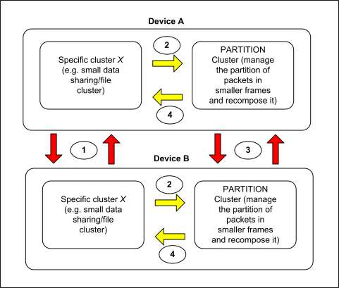
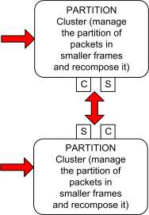
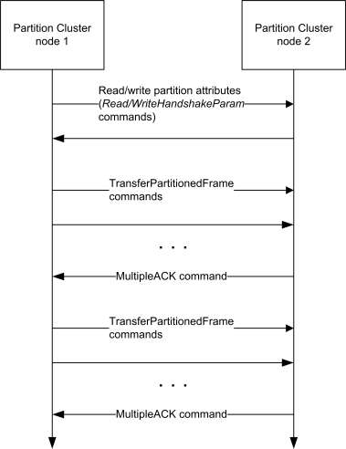

CHAPTER 9 PROTOCOL INTERFACES ¶
The Cluster Library is made of individual chapters such as this one. See Document Control in the Cluster Library for a list of all chapters and documents. References between chapters are made using a X.Y notation where X is the chapter and Y is the sub-section within that chapter. References to external documents are contained in Chapter 1 and are made using [Rn] notation.
9.1 General Description ¶
9.1.1 Introduction ¶
The clusters specified in this document are for use in applications which interface to external protocols.
9.1.2 Cluster List ¶
This section lists the clusters specified in this document and gives examples of typical usage for the purpose of clarification.
The clusters defined in this document are listed in Table 9-1.
Table 9-1. Clusters of the Protocol Interfaces Functional ¶
| Cluster ID | Cluster Name | Description |
|---|---|---|
| 0x0016 | Partition | The commands and attributes for enabling par- titioning of a large frame between devices |
| 0x0600 | Generic tunnel | The minimum common commands and attrib- utes required to tunnel any protocol. |
| 0x0601 | BACnet protocol tunnel | Commands and attributes required to tunnel the BACnet protocol. |
| 0x0602 | Analog input (BACnet regular) | An interface for accessing a number of com- monly used BACnet based attributes of an an- alog measurement. |
| 0x0603 | Analog input (BACnet extended) | An interface for accessing a number of BAC- net based attributes of an analog measurement. |
| 0x0604 | Analog output (BACnet regular) | An interface for accessing a number of com- monly used BACnet based attributes of an an- alog output. |
| 0x0605 | Analog output (BACnet extended) | An interface for accessing a number of BAC- net based attributes of an analog output. |
| 0x0606 | Analog value(BACnet regular) | An interface for accessing a number of com- monly used BACnet based attributes of an an- alog value, typically used as a control system parameter. |
| Cluster ID | Cluster Name | Description |
|---|---|---|
| 0x0607 | Analog value(BACnet extended) | An interface for accessing a number of BAC- net based attributes of an analog value, typi- cally used as a control system parameter. |
| 0x0608 | Binary input (BACnet regular) | An interface for accessing a number of com- monly used BACnet based attributes of a bi- nary measurement. |
| 0x0609 | Binary input (BACnet extended) | An interface for accessing a number of BAC- net based attributes of a binary measurement. |
| 0x060a | Binary output (BACnet regular) | An interface for accessing a number of com- monly used BACnet based attributes of a bi- nary output. |
| 0x060b | Binary output (BACnet extended) | An interface for accessing a number of BAC- net based attributes of a binary output. |
| 0x060c | Binary value (BACnet regular) | An interface for accessing a number of com- monly used BACnet based attributes of a bi- nary value, typically used as a control system parameter. |
| 0x060d | Binary value (BACnet extended) | An interface for accessing a number of BAC- net based attributes of a binary value, typically used as a control system parameter. |
| 0x060e | Multistate input (BACnet regular) | An interface for accessing a number of com- monly used BACnet based attributes of a mul- tistate measurement. |
| 0x060f | Multistate input (BACnet extended) | An interface for accessing a number of BAC- net based attributes of a multistate measure- ment. |
| 0x0610 | Multistate output (BACnet regular) | An interface for accessing a number of com- monly used BACnet based attributes of a mul- tistate output. |
| 0x0611 | Multistate output (BACnet extended) | An interface for accessing a number of BAC- net based attributes of a multistate output. |
| 0x0612 | Multistate value (BACnet regular) | An interface for accessing a number of com- monly used BACnet based attributes of a mul- tistate value, typically used as a control system parameter. |
| 0x0613 | Multistate value (BACnet extended) | An interface for accessing a number of BAC- net based attributes of a multistate value, typi- cally used as a control system parameter. |
| 0x0614 | 11073 Protocol Tunnel | Interface for 11073 Protocol Tunnel used in health care applications |
| 0x0615 | ISO7816 Tunnel | Commands and attributes for mobile office so- lutions using devices. |
9.2 Generic Tunnel ¶
9.2.1 Overview ¶
Please see Chapter 2 for a general cluster overview defining cluster architecture, revision, classification, identification, etc.
The generic cluster provides the minimum common commands and attributes required to discover protocol tunnelling devices. A protocol cluster specific to the protocol being tunneled shall be implemented on the same endpoint as the Generic Tunnel cluster.
Note: The reverse is not true, as there may be tunnel clusters that do not require the Generic Tunnel cluster.
9.2.1.1 Revision History ¶
The global ClusterRevision attribute value SHALL be the highest revision number in the table below.
| Rev | Description |
|---|---|
| 1 | mandatory global ClusterRevision attribute added |
9.2.1.2 Classification ¶
| Hierarchy | Role | PICS Code | Primary Transaction |
|---|---|---|---|
| Base | Application | TUN | Type 1 (client to server) |
9.2.1.3 Cluster Identifiers ¶
| Identifier | Name |
|---|---|
| 0x0600 | Generic Tunnel |
9.2.2 Server ¶
9.2.2.1 Dependencies ¶
The maximum size of the ProtocolAddress attribute is dependent on the protocol supported by any associated specific protocol tunnel cluster supported on the same endpoint (see 9.2.2.2.3, ProtocolAddress Attribute).
9.2.2.2 Attributes ¶
The Generic Tunnel contains the attributes summarized in Table 9-2.
Table 9-2. Attributes of the Generic Tunnel Cluster ¶
| Id | Name | Type | Range | Acc | Default | M/O |
|---|---|---|---|---|---|---|
| 0x0001 | MaximumIncomingTransferSize | uint16 | 0x0000 - 0xffff | R | 0x0000 | M |
| 0x0002 | MaximumOutgoingTransferSize | uint16 | 0x0000 - 0xffff | R | 0x0000 | M |
| 0x0003 | ProtocolAddress | octstr | 0 - 255 octets | RW | Null string | M |
9.2.2.2.1 MaximumIncomingTransferSize Attribute ¶
The MaximumIncomingTransferSize attribute specifies the maximum size, in octets, of the application service data unit (ASDU) that can be transferred to this node in one single message transfer. The ASDU referred to is the ZCL frame, including header and payload, of any command received by a protocol specific tunnel cluster on the same endpoint.
This value cannot exceed the Maximum Incoming Transfer Size field of the node descriptor on the device supporting this cluster.
9.2.2.2.2 MaximumOutgoingTransferSize Attribute ¶
The MaximumOutgoingTransferSize attribute specifies the maximum size, in octets, of the application sublayer data unit (ASDU) that can be transferred from this node in one single message transfer. The ASDU referred to is the ZCL frame, including header and payload, of any command sent by a protocol specific tunnel cluster on the same endpoint.
This value cannot exceed the Maximum Outgoing Transfer Size field of the node descriptor on the device supporting this cluster.
9.2.2.2.3 ProtocolAddress Attribute ¶
The ProtocolAddress attribute contains an octet string that is interpreted as a device address by the protocol being tunneled by an associated protocol specific tunnel cluster (if any). The overall maximum size of the string is 255 octets, but devices need only support the actual maximum size required by that protocol
9.2.2.3 Commands Received ¶
The cluster specific commands received by the Generic Tunnel server cluster are listed in Table 9-3.
Table 9-3. Command IDs Received by the Generic Tunnel Cluster ¶
| Identifier | Description | M/O |
|---|---|---|
| 0x00 | Match Protocol Address | M |
9.2.2.3.1 Match Protocol Address Command ¶
The Match Protocol Address command payload shall be formatted as illustrated in Figure 9-1.
Figure 9-1. Format of Match Protocol Address Command Payload ¶
| octets | Variable |
|---|---|
| Data Type | octstr |
| Field Name | Protocol Address |
9.2.2.3.2 When Generated ¶
This command is generated when an associated protocol specific tunnel cluster wishes to find the address (node, endpoint) of the Generic Tunnel server cluster representing a protocol-specific device with a given protocol address. The command is typically multicast to a group of inter-communicating Generic Tunnel clusters.
9.2.2.3.3 Effect on Receipt ¶
On receipt of this command, a device shall match the Protocol Address field of the received command to the ProtocolAddress attribute. If they are equal, it shall return the Match Protocol Address Response command (see 9.2.2.4.1), otherwise it shall do nothing.
9.2.2.4 Commands Generated ¶
The cluster specific commands generated by the Generic Tunnel server cluster are listed in Table 9-4. Command IDs Generated by the Generic Tunnel Cluster.
Table 9-4. Command IDs Generated by the Generic Tunnel Cluster ¶
| Identifier | Description | M/O |
|---|---|---|
| 0x00 | Match Protocol Address Response | M |
| 0x01 | Advertise Protocol Address | O |
9.2.2.4.1 Match Protocol Address Response Command ¶
The Match Protocol Address Response command payload shall be formatted as illustrated in Figure 9-2.
Figure 9-2. Match Protocol Address Response Command Payload ¶
| octets | 8 | Variable |
|---|---|---|
| Data Type | EUI64 | octstr |
| Field Name | Device IEEE Address | Protocol Address |
The Device IEEE Address field shall be set equal to the IEEE address of the responding device. The Protocol Address field shall be set equal to the matched Protocol Address.
9.2.2.4.2 When Generated ¶
This command is generated upon receipt of a Match Protocol Address command (see 9.2.2.3.1), to indicate that the Protocol Address was successfully matched by the responding device.
9.2.2.4.3 Advertise Protocol Address Command ¶
The Advertise Protocol Address command payload shall be formatted as illustrated in Figure 9-3.
Figure 9-3. Advertise Protocol Address Command Payload ¶
| octets | Variable |
|---|---|
| Data Type | octstr |
| Field Name | Protocol Address |
The Protocol Address field shall be set to the value of the ProtocolAddress attribute.
9.2.2.4.4 When Generated ¶
This command is typically sent upon startup, and whenever the ProtocolAddress attribute changes. It is typically multicast to a group of inter-communicating Generic Tunnel clusters.
9.2.3 Client ¶
The client cluster has no specific attributes or dependencies. The client cluster receives the cluster specific commands detailed in Commands Generated. The client cluster generates the cluster specific commands detailed in 9.2.2.3.
9.3 BACnet Protocol Tunnel ¶
9.3.1 Overview ¶
Please see Chapter 2 for a general cluster overview defining cluster architecture, revision, classification, identification, etc.
The BACnet Protocol Tunnel cluster provides the commands and attributes required to tunnel the BACnet protocol (see [A1]). The server cluster receives BACnet NPDUs and the client cluster generates BACnet NPDUs, thus it is necessary to have both server and client on an endpoint to tunnel BACnet messages in both directions.
9.3.1.1 Revision History ¶
The global ClusterRevision attribute value SHALL be the highest revision number in the table below.
| Rev | Description |
|---|---|
| 1 | mandatory global ClusterRevision attribute added |
9.3.1.2 Classification ¶
| Hierarchy | Role | PICS Code | Primary Transaction |
|---|
| Base | Application | BACTUN | Type 1 (client to server) |
|---|
9.3.1.3 Cluster Identifiers ¶
| Identifier | Name |
|---|---|
| 0x0601 | BACnet Protocol Tunnel |
9.3.2 Server ¶
9.3.2.1 Dependencies ¶
Any endpoint that supports the BACnet Protocol Tunnel server cluster shall also support the Generic Tunnel server cluster.
The associated Generic Tunnel server cluster shall have its ProtocolAddress attribute equal to the device identifier of the BACnet device represented on that endpoint, expressed as an octet string (i.e., with identical format as a BACnet OID data type, but interpreted as an octet string). The special three octet value 0x3FFFFF of the ProtocolAddress attribute indicates that the associated BACnet device is not commissioned.
The associated Generic Tunnel server cluster shall also have its MaximumIncomingTransferSize attribute and MaximumOutgoingTransferSize attribute equal to or greater than 504 octets. Accordingly, this cluster requires fragmentation to be implemented, with maximum transfer sizes given by these attributes.
9.3.2.2 Attributes ¶
The BACnet Protocol Tunnel cluster does not contain any attributes.
9.3.2.3 Commands Received ¶
The cluster specific commands received by the BACnet Protocol Tunnel server cluster are listed in Table 9-5.
Table 9-5. Command IDs for the BACnet Protocol Tunnel Cluster ¶
| Identifier | Description | M/O |
|---|---|---|
| 0x00 | Transfer NPDU | M |
9.3.2.3.1 Transfer NPDU Command ¶
9.3.2.3.1.1 Payload Format ¶
The Transfer NPDU command payload shall be formatted as illustrated in Figure 9-4.
Figure 9-4. Format of the Transfer NPDU Command Payload ¶
| octets | Variable |
|---|---|
| Data Type | Sequence of data8 |
| Field Name | NPDU |
9.3.2.3.1.2 NPDU Field ¶
The NPDU field is of variable length and is a BACnet NPDU as defined in the BACnet standard [A1]. Its format is a sequence of 8-bit data (see General Data section of Chapter 2 of arbitrary length.
9.3.2.3.1.3 When Generated ¶
This command is generated when a BACnet network layer wishes to transfer a BACnet NPDU across a tunnel to another BACnet network layer.
9.3.2.3.1.4 Effect on Receipt ¶
On receipt of this command, a device shall process the BACnet NPDU as specified in the BACnet standard [A1].
9.3.2.4 Commands Generated ¶
No cluster specific commands are generated by the server cluster.
9.3.3 Client ¶
The client cluster has no specific attributes or dependencies. The client does not receive any cluster specific commands. The cluster specific commands generated by the client cluster are listed in 9.3.2.3.
9.4 BACnet Input, Output and Value Clusters ¶
9.4.1 Overview ¶
Please see Chapter 2 for a general cluster overview defining cluster architecture, revision, classification, identification, etc.
This section specifies a number of clusters which are based on the Input, Output and Value objects specified by BACnet (see [A1]).
Each of these three objects is specified by BACnet in three different forms - Analog, Binary and Multistate. clusters are specified here based on all nine such BACnet objects.
Each such BACnet object is represented in the ZCL by three related clusters – a BACnet Basic cluster , a BACnet Regular cluster and a BACnet Extended cluster. The properties of each BACnet object are implemented as attributes, and are divided into three sets, which are allocated to the clusters as follows.
BACnet Basic clusters implement attributes and functionality that can be readily employed either via interworking with a BACnet system, or by a non-BACnet system. Accordingly, these clusters are included in the ZCL General functional domain.
BACnet Regular and BACnet Extended clusters implement attributes and functionality that are specifically intended for interworking with a BACnet system (through a BACnet gateway). Accordingly, these clusters are included in the ZCL Protocol Interface functional domain.
A BACnet Regular cluster may only be implemented on an endpoint that also implements its associated Basic cluster. Similarly, a BACnet Extended cluster may only be implemented on an endpoint that also implements both its associated BACnet Regular cluster and its associated Basic cluster.
The clusters specified herein are for use typically in Commercial Building applications, but may be used in any application domain.
9.4.2 Analog Input (BACnet Regular) ¶
The Analog Input (BACnet Regular) cluster provides an interface for accessing a number of commonly used BACnet based attributes of an analog measurement. It is used principally for interworking with BACnet systems.
9.4.2.1 Revision History ¶
The global ClusterRevision attribute value SHALL be the highest revision number in the table below.
| Rev | Description |
|---|---|
| 1 | mandatory global ClusterRevision attribute added |
9.4.2.2 Classification ¶
| Hierarchy | Role | PICS Code | Primary Transaction |
|---|---|---|---|
| Base | Application | BAI | Type 2 (server to client) |
9.4.2.3 Cluster Identifiers ¶
| Identifier | Name |
|---|---|
| 0x0602 | Analog Input (BACnet Regular) |
9.4.2.4 Server ¶
9.4.2.4.1 Dependencies ¶
Any endpoint that supports this cluster must support the Analog Input (Basic) cluster.
9.4.2.4.2 Attributes ¶
The attributes of this cluster are detailed in Table 9-6.
Table 9-6. Attributes of the Analog Input (BACnet Regular) Server ¶
| Identi- fier | Name | Type | Range | Acc | Default | M/O |
|---|---|---|---|---|---|---|
| 0x0016 | COVIncrement | single | - | R*W | 0 | O |
| 0x001F | DeviceType | string | - | R | Null string | O |
| 0x004B | ObjectIdenti- fier | bacOID | 0x00000000-0xffffffff | R | - | M |
| 0x004D | ObjectName | string | - | R | Null string | M |
| 0x004F | ObjectType | enum16 | - | R | - | M |
| 0x0076 | UpdateInterval | uint8 | - | R*W | 0 | O |
| 0x00A8 | ProfileName | string | - | R*W | Null string | O |
For an explanation of the attributes, see section 9.4.20.
9.4.2.4.3 Commands ¶
No cluster specific commands are received or generated.
9.4.2.4.4 Attribute Reporting ¶
No attribute reporting is mandated for this cluster.
9.4.2.5 Client ¶
The client has no dependencies, no attributes, and receives or generates no cluster specific commands.
9.4.3 Analog Input (BACnet Extended) ¶
The Analog Input (BACnet Extended) cluster provides an interface for accessing a number of BACnet based attributes of an analog measurement. It is used principally for interworking with BACnet systems.
9.4.3.1 Revision History ¶
The global ClusterRevision attribute value SHALL be the highest revision number in the table below.
| Rev | Description |
|---|---|
| 1 | mandatory global ClusterRevision attribute added |
9.4.3.2 Classification ¶
| Hierarchy | Role | PICS Code | Primary Transaction |
|---|
| Base | Application | AIBE | Type 2 (server to client) |
|---|
9.4.3.3 Cluster Identifiers ¶
| Identifier | Name |
|---|---|
| 0x0603 | Analog Input (BACnet Extended) |
9.4.3.4 Server ¶
9.4.3.4.1 Dependencies ¶
Any endpoint that supports this cluster must support the Analog Input (Basic) cluster and the Analog Input (BACnet Regular) cluster.
9.4.3.4.2 Attributes ¶
The attributes of this cluster are detailed in Table 9-7.
Table 9-7. Attributes of the Analog Input (BACnet Extended) Server ¶
| Id | Name | Type | Range | Acc | Def | M/O |
|---|---|---|---|---|---|---|
| 0x0000 | AckedTransitions | map8 | - | R*W | 0 | M |
| 0x0011 | NotificationClass | uint16 | 0x0000 - 0xffff | R*W | 0 | M |
| 0x0019 | Deadband | single | - | R*W | 0 | M |
| 0x0023 | EventEnable | map8 | - | R*W | 0 | M |
| 0x0024 | EventState | enum8 | - | R | 0 | O |
| 0x002D | HighLimit | single | - | R*W | 0 | M |
| 0x0034 | LimitEnable | map8 | 0x00 - 0x11 | R*W | 0x00 | M |
| 0x003B | LowLimit | single | - | R*W | 0 | M |
| 0x0048 | NotifyType | enum8 | - | R*W | 0 | M |
| 0x0071 | TimeDelay | uint8 | - | R*W | 0 | M |
| 0x0082 | EventTimeStamps | array[3] of (uint16, ToD, or struct of (date, ToD)) | - | R | - | M |
For an explanation of the attributes, see section 9.4.20 and 9.4.21.
9.4.3.4.3 Commands ¶
No cluster specific commands are received or generated.
9.4.3.4.4 Attribute Reporting ¶
No attribute reporting is mandated for this cluster.
9.4.3.5 Client ¶
The client has no dependencies, no attributes, and receives or generates no cluster specific commands.
9.4.4 Analog Output (BACnet Regular) ¶
The Analog Output (BACnet Regular) cluster provides an interface for accessing a number of commonly used BACnet based attributes of an analog output. It is used principally for interworking with BACnet systems.
9.4.4.1 Revision History ¶
The global ClusterRevision attribute value SHALL be the highest revision number in the table below.
| Rev | Description |
|---|---|
| 1 | mandatory global ClusterRevision attribute added |
9.4.4.2 Classification ¶
| Hierarchy | Role | PICS Code | Primary Transaction |
|---|---|---|---|
| Base | Application | AOB | Type 2 (server to client) |
9.4.4.3 Cluster Identifiers ¶
| Identifier | Name |
|---|---|
| 0x0604 | Analog Output (BACnet Regular) |
9.4.4.4 Server ¶
9.4.4.4.1 Dependencies ¶
Any endpoint that supports this cluster shall also support the Analog Output (Basic) cluster, and this cluster shall support the PriorityArray and RelinquishDefault attributes.
9.4.4.4.2 Attributes ¶
The attributes of this cluster are detailed in Table 9-8.
Table 9-8. Attributes of the Analog Output (BACnet Regular) Server ¶
| Id | Name | Type | Range | Acc | Default | M/O |
|---|---|---|---|---|---|---|
| 0x0016 | COVIncrement | single | - | R*W | 0 | O |
| 0x001F | DeviceType | string | - | R | Null string | O |
| 0x004B | ObjectIdentifier | bacOID | 0x00000000 - 0xffffffff | R | - | M |
| 0x004D | ObjectName | string | - | R | Null string | M |
| 0x004F | ObjectType | enum16 | - | R | - | M |
| 0x00A8 | ProfileName | string | - | R*W | Null string | O |
For an explanation of the attributes, see section 9.4.20.
9.4.4.4.3 Commands ¶
No cluster specific commands are received or generated.
9.4.4.4.4 Attribute Reporting ¶
No attribute reporting is mandated for this cluster.
9.4.4.5 Client ¶
The client has no dependencies, no specific attributes, and receives or generates no cluster specific commands.
9.4.5 Analog Output (BACnet Extended) ¶
The Analog Output (BACnet Extended) cluster provides an interface for accessing a number of BACnet based attributes of an analog output. It is used principally for interworking with BACnet systems.
9.4.5.1 Revision History ¶
The global ClusterRevision attribute value SHALL be the highest revision number in the table below.
| Rev | Description |
|---|---|
| 1 | mandatory global ClusterRevision attribute added |
9.4.5.2 Classification ¶
| Hierarchy | Role | PICS Code | Primary Transaction |
|---|
| Base | Application | AOBE | Type 2 (server to client) |
|---|
9.4.5.3 Cluster Identifiers ¶
| Identifier | Name |
|---|---|
| 0x0605 | Analog Output (BACnet Extended) |
9.4.5.4 Server ¶
9.4.5.4.1 Dependencies ¶
Any endpoint that supports this cluster must support the Analog Output (Basic) cluster and the Analog Output (BACnet Regular) cluster.
9.4.5.4.2 Attributes ¶
The attributes of this cluster are detailed in Table 9-9.
Table 9-9. Attributes of the Analog Output (BACnet Extended) Server ¶
| Id | Name | Type | Range | Acc | Def | M/O |
|---|---|---|---|---|---|---|
| 0x0000 | AckedTransitions | map8 | - | R*W | 0 | M |
| 0x0011 | NotificationClass | uint16 | 0x0000 - 0xffff | R*W | 0 | M |
| 0x0019 | Deadband | single | - | R*W | 0 | M |
| 0x0023 | EventEnable | map8 | - | R*W | 0 | M |
| 0x0024 | EventState | enum8 | - | R | 0 | O |
| 0x002D | HighLimit | single | - | R*W | 0 | M |
| 0x0034 | LimitEnable | map8 | 0x00 - 0x11 | R*W | 0x00 | M |
| 0x003B | LowLimit | single | - | R*W | 0 | M |
| 0x0048 | NotifyType | enum8 | - | R*W | 0 | M |
| 0x0071 | TimeDelay | uint8 | - | R*W | 0 | M |
| 0x0082 | EventTimeStamps | array[3] of (uint16, ToD, or struct of (date, ToD)) | - | R | - | M |
For an explanation of the attributes, see sections 9.4.20 and 9.4.21.
9.4.5.4.3 Commands ¶
No cluster specific commands are received or generated.
9.4.5.4.4 Attribute Reporting ¶
No attribute reporting is mandated for this cluster.
9.4.5.5 Client ¶
The client has no dependencies, no attributes, and receives or generates no cluster specific commands.
9.4.6 Analog Value (BACnet Regular) ¶
The Analog Value (BACnet Regular) cluster provides an interface for accessing commonly used BACnet based characteristics of an analog value, typically used as a control system parameter. It is principally used for interworking with BACnet systems.
9.4.6.1 Revision History ¶
The global ClusterRevision attribute value SHALL be the highest revision number in the table below.
| Rev | Description |
|---|---|
| 1 | mandatory global ClusterRevision attribute added |
9.4.6.2 Classification ¶
| Hierarchy | Role | PICS Code | Primary Transaction |
|---|---|---|---|
| Base | Application | AVB | Type 2 (server to client) |
9.4.6.3 Cluster Identifiers ¶
| Identifier | Name |
|---|---|
| 0x0606 | Analog Value (BACnet Regular) |
9.4.6.4 Server ¶
9.4.6.4.1 Dependencies ¶
Any endpoint that supports this cluster must support the Analog Value (Basic) cluster.
9.4.6.4.2 Attributes ¶
The attributes of this cluster are detailed in Table 9-10.
Table 9-10. Attributes of the Analog Value (BACnet Regular) Server ¶
| Id | Name | Type | Range | Acc | Default | M/ O |
|---|---|---|---|---|---|---|
| 0x0016 | COVIncrement | single | - | R*W | 0 | O |
| 0x004B | ObjectIdentifier | bacOID | 0x00000000 - 0xffffffff | R | - | M |
| 0x004D | ObjectName | string | - | R | Null string | M |
| 0x004F | ObjectType | enum16 | - | R | - | M |
| 0x00A8 | ProfileName | string | - | R*W | Null string | O |
For an explanation of the attributes, see section 9.4.20.
9.4.6.4.3 Commands ¶
No cluster specific commands are received or generated.
9.4.6.4.4 Attribute Reporting ¶
No attribute reporting is mandated for this cluster.
9.4.6.5 Client ¶
The client has no dependencies, no attributes, and receives or generates no cluster specific commands.
9.4.7 Analog Value (BACnet Extended) ¶
The Analog Value (BACnet Extended) cluster provides an interface for accessing BACnet based characteristics of an analog value, typically used as a control system parameter. It is principally used for interworking with BACnet systems.
9.4.7.1 Revision History ¶
The global ClusterRevision attribute value SHALL be the highest revision number in the table below.
| Rev | Description |
|---|---|
| 1 | mandatory global ClusterRevision attribute added |
9.4.7.2 Classification ¶
| Hierarchy | Role | PICS Code | Primary Transaction |
|---|---|---|---|
| Base | Application | AVBE | Type 2 (server to client) |
9.4.7.3 Cluster Identifiers ¶
| Identifier | Name |
|---|---|
| 0x0607 | Analog Value (BACnet Extended) |
9.4.7.4 Server ¶
9.4.7.4.1 Dependencies ¶
Any endpoint that supports this cluster must support the Analog Value (Basic) cluster and the Analog Value (BACnet Regular) cluster.
9.4.7.4.2 Attributes ¶
The attributes of this cluster are detailed in Table 9-11.
Table 9-11. Attributes of the Analog Value (BACnet Extended) Server ¶
| Id | Name | Type | Range | Acc | Def | M/O |
|---|---|---|---|---|---|---|
| 0x0000 | AckedTransitions | map8 | - | R*W | 0 | M |
| 0x0011 | NotificationClass | uint16 | 0x0000 - 0xffff | R*W | 0 | M |
| 0x0019 | Deadband | single | - | R*W | 0 | M |
| 0x0023 | EventEnable | map8 | - | R*W | 0 | M |
| 0x0024 | EventState | enum8 | - | R | 0 | O |
| 0x002D | HighLimit | single | - | R*W | 0 | M |
| 0x0034 | LimitEnable | map8 | 0x00 - 0x11 | R*W | 0x00 | M |
| 0x003B | LowLimit | single | - | R*W | 0 | M |
| 0x0048 | NotifyType | enum8 | - | R*W | 0 | M |
| 0x0071 | TimeDelay | uint8 | - | R*W | 0 | M |
| 0x0082 | EventTimeStamps | array[3] of (uint16, ToD, or struct of (date, ToD)) | - | R | - | M |
For an explanation of the attributes, see sections9.4.20 and 9.4.21.
9.4.7.4.3 Commands ¶
No cluster specific commands are received or generated.
9.4.7.4.4 Attribute Reporting ¶
No attribute reporting is mandated for this cluster.
9.4.7.5 Client ¶
The client has no dependencies, no attributes, and receives or generates no cluster specific commands.
9.4.8 Binary Input (BACnet Regular) ¶
The Binary Input (BACnet Regular) cluster provides an interface for accessing a number of commonly used BACnet based attributes of a binary measurement. It is used principally for interworking with BACnet systems.
9.4.8.1 Revision History ¶
The global ClusterRevision attribute value SHALL be the highest revision number in the table below.
| Rev | Description |
|---|---|
| 1 | mandatory global ClusterRevision attribute added |
9.4.8.2 Classification ¶
| Hierarchy | Role | PICS Code | Primary Transaction |
|---|---|---|---|
| Base | Application | BIB | Type 2 (server to client) |
9.4.8.3 Cluster Identifiers ¶
| Identifier | Name |
|---|---|
| 0x0608 | Binary Input (BACnet Regular) |
9.4.8.4 Server ¶
9.4.8.4.1 Dependencies ¶
Any endpoint that supports this cluster must support the Binary Input (Basic) cluster.
9.4.8.4.2 Attributes ¶
The attributes of this cluster are detailed in Table 9-12.
Table 9-12. Attributes of the Binary Input (BACnet Regular) Server ¶
| Id | Name | Type | Range | Acc | Default | MO |
|---|---|---|---|---|---|---|
| 0x000F | ChangeOfStateCount | uint32 | - | R*W | 0xffffffff | O |
| 0x0010 | ChangeOfStateTime | struct (date, ToD) | - | R | 0xffffffff 0xffffffff | O |
| 0x001F | DeviceType | string | - | R | Null string | O |
| 0x0021 | ElapsedActiveTime | uint32 | - | R*W | 0xffffffff | O |
| 0x004B | ObjectIdentifier | bacOID | 0x00000000 - 0xffffffff | R | - | M |
| 0x004D | ObjectName | string | - | R | Null string | M |
| 0x004F | ObjectType | enum16 | - | R | - | M |
| 0x0072 | TimeOfATReset | struct (date, ToD) | - | R | 0xffffffff 0xffffffff | O |
| 0x0073 | TimeOfSCReset | struct (date, ToD) | - | R | 0xffffffff 0xffffffff | O |
| 0x00A8 | ProfileName | string | - | R*W | Null string | O |
For an explanation of the attributes, see section 9.4.20.
9.4.8.4.3 Commands ¶
No cluster specific commands are received or generated.
9.4.8.4.4 Attribute Reporting ¶
No attribute reporting is mandated for this cluster.
9.4.8.5 Client ¶
The client has no dependencies, no attributes, and receives or generates no cluster specific commands.
9.4.9 Binary Input (BACnet Extended) ¶
The Binary Input (BACnet Extended) cluster provides an interface for accessing a number of BACnet based attributes of a binary measurement. It is used principally for interworking with BACnet systems.
9.4.9.1 Revision History ¶
The global ClusterRevision attribute value SHALL be the highest revision number in the table below.
| Rev | Description |
|---|---|
| 1 | mandatory global ClusterRevision attribute added |
9.4.9.2 Classification ¶
| Hierarchy | Role | PICS Code | Primary Transaction |
|---|---|---|---|
| Base | Application | BIBE | Type 2 (server to client) |
9.4.9.3 Cluster Identifiers ¶
| Identifier | Name |
|---|---|
| 0x0609 | Binary Input (BACnet Extended) |
9.4.9.4 Server ¶
9.4.9.4.1 Dependencies ¶
Any endpoint that supports this cluster must support the Binary Input (Basic) cluster and the Binary Input (BACnet Regular) cluster.
9.4.9.4.2 Attributes ¶
The attributes of this cluster are detailed in Table 9-13.
Table 9-13. Attributes of the Binary Input (BACnet Extended) Server ¶
| Id | Name | Type | Range | Ac- cess | Def | M/O |
|---|---|---|---|---|---|---|
| 0x0000 | AckedTransitions | map8 | - | R*W | 0 | M |
| 0x0006 | AlarmValue | bool | 0 - 1 | R*W | - | M |
| 0x0011 | NotificationClass | uint16 | 0x0000 - 0xffff | R*W | 0 | M |
| 0x0023 | EventEnable | map8 | - | R*W | 0 | M |
| 0x0024 | EventState | enum8 | - | R | 0 | O |
| 0x0048 | NotifyType | enum8 | - | R*W | 0 | M |
| 0x0071 | TimeDelay | uint8 | - | R*W | 0 | M |
| Id | Name | Type | Range | Ac- cess | Def | M/O |
|---|---|---|---|---|---|---|
| 0x0082 | EventTimeStamps | array[3] of (uint16, ToD, or struct of (date, ToD)) | - | R | - | M |
For an explanation of the attributes, see sections 9.4.20 and 9.4.21.
9.4.9.4.3 Commands ¶
No cluster specific commands are received or generated.
9.4.9.4.4 Attribute Reporting ¶
No attribute reporting is mandated for this cluster.
9.4.9.5 Client ¶
The client has no dependencies, no attributes, and receives or generates no cluster specific commands.
9.4.10 Binary Output (BACnet Regular) ¶
The Analog Output (BACnet Regular) cluster provides an interface for accessing a number of commonly used BACnet based attributes of a binary output. It is used principally for interworking with BACnet systems.
9.4.10.1 Revision History ¶
The global ClusterRevision attribute value SHALL be the highest revision number in the table below.
| Rev | Description |
|---|---|
| 1 | mandatory global ClusterRevision attribute added |
9.4.10.2 Classification ¶
| Hierarchy | Role | PICS Code | Primary Transaction |
|---|---|---|---|
| Base | Application | BOB | Type 2 (server to client) |
9.4.10.3 Cluster Identifiers ¶
| Identifier | Name |
|---|---|
| 0x060a | Binary Output (BACnet Regular) |
9.4.10.4 Server ¶
9.4.10.4.1 Dependencies ¶
Any endpoint that supports this cluster shall also support the Binary Output (Basic) cluster, and this cluster shall support the PriorityArray and RelinquishDefault attributes.
9.4.10.4.2 Attributes ¶
The attributes of this cluster are detailed in Table 9-14.
Table 9-14. Attributes of the Binary Output (BACnet Regular) Server ¶
| Id | Name | Type | Range | Acc | Default | MO |
|---|---|---|---|---|---|---|
| 0x000F | ChangeOfStateCount | uint32 | - | R*W | 0xffffffff | O |
| 0x0010 | ChangeOfStateTime | struct (date, ToD) | - | R | 0xffffffff 0xffffffff | O |
| 0x001F | DeviceType | string | - | R | Null string | O |
| 0x0021 | ElapsedActiveTime | uint32 | - | R*W | 0xffffffff | O |
| 0x0028 | FeedBackValue | enum8 | 0 - 1 | R*W | 0 | O |
| 0x004B | ObjectIdentifier | bacOID | 0x00000000 - 0xffffffff | R | - | M |
| 0x004D | ObjectName | string | - | R | Null string | M |
| 0x004F | ObjectType | enum16 | - | R | - | M |
| 0x0072 | TimeOfATReset | struct (date, ToD) | - | R | 0xffffffff 0xffffffff | O |
| 0x0073 | TimeOfSCReset | struct (date, ToD) | - | R | 0xffffffff 0xffffffff | O |
| 0x00A8 | ProfileName | string | - | R*W | Null string | O |
For an explanation of the attributes, see section 9.4.20.
9.4.10.4.3 Commands ¶
No cluster specific commands are received or generated.
9.4.10.4.4 Attribute Reporting ¶
No attribute reporting is mandated for this cluster.
9.4.10.5 Client ¶
The client has no dependencies, no attributes, and receives or generates no cluster specific commands.
9.4.11 Binary Output (BACnet Extended) ¶
The Binary Output (BACnet Extended) cluster provides an interface for accessing a number of BACnet based attributes of a binary output. It is used principally for interworking with BACnet systems.
9.4.11.1 Revision History ¶
The global ClusterRevision attribute value SHALL be the highest revision number in the table below.
| Rev | Description |
|---|---|
| 1 | mandatory global ClusterRevision attribute added |
9.4.11.2 Classification ¶
| Hierarchy | Role | PICS Code | Primary Transaction |
|---|---|---|---|
| Base | Application | BOBE | Type 2 (server to client) |
9.4.11.3 Cluster Identifiers ¶
| Identifier | Name |
|---|---|
| 0x060b | Binary Output (BACnet Extended) |
9.4.11.4 Server ¶
9.4.11.4.1 Dependencies ¶
Any endpoint that supports this cluster must support the Binary Output (Basic) cluster and the Binary Output (BACnet Regular) cluster.
9.4.11.4.2 Attributes ¶
The attributes of this cluster are detailed in Table 9-15.
Table 9-15. Attributes of the Binary Output (BACnet Extended) Server ¶
| Id | Name | Type | Range | Acc | Def | M/O |
|---|---|---|---|---|---|---|
| 0x0000 | AckedTransitions | map8 | - | R*W | 0 | M |
| Id | Name | Type | Range | Acc | Def | M/O |
|---|---|---|---|---|---|---|
| 0x0011 | NotificationClass | uint16 | 0x0000 - 0xffff | R*W | 0 | M |
| 0x0023 | EventEnable | map8 | - | R*W | 0 | M |
| 0x0024 | EventState | enum8 | - | R | 0 | O |
| 0x0048 | NotifyType | enum8 | - | R*W | 0 | M |
| 0x0071 | TimeDelay | uint8 | - | R*W | 0 | M |
| 0x0082 | EventTimeStamps | array[3] of (uint16, ToD, or struct of (date, ToD)) | - | R | - | M |
For an explanation of the attributes, see sections 9.4.20 and 9.4.21.
9.4.11.4.3 Commands ¶
No cluster specific commands are received or generated.
9.4.11.4.4 Attribute Reporting ¶
No attribute reporting is mandated for this cluster.
9.4.11.5 Client ¶
The client has no dependencies, no attributes, and receives or generates no cluster specific commands.
9.4.12 Binary Value (BACnet Regular) ¶
The Binary Value (BACnet Regular) cluster provides an interface for accessing commonly used BACnet based characteristics of a binary value, typically used as a control system parameter. It is principally used for interworking with BACnet systems.
9.4.12.1 Revision History ¶
The global ClusterRevision attribute value SHALL be the highest revision number in the table below.
| Rev | Description |
|---|---|
| 1 | mandatory global ClusterRevision attribute added |
9.4.12.2 Classification ¶
| Hierarchy | Role | PICS Code | Primary Transaction |
|---|---|---|---|
| Base | Application | BVB | Type 2 (server to client) |
9.4.12.3 Cluster Identifiers ¶
| Identifier | Name |
|---|---|
| 0x060c | Binary Value (BACnet Regular) |
9.4.12.4 Server ¶
9.4.12.4.1 Dependencies ¶
Any endpoint that supports this cluster must support the Binary Value (Basic) cluster.
9.4.12.4.2 Attributes ¶
The attributes of this cluster are detailed in Table 9-16.
Table 9-16. Attributes of the Binary Value (BACnet Regular) Server ¶
| Id | Name | Type | Range | Acc | Default | M/O |
|---|---|---|---|---|---|---|
| 0x000F | ChangeOfStateCount | uint32 | - | R*W | 0xffffffff | O |
| 0x0010 | ChangeOfStateTime | struct (date, ToD) | - | R | 0xffffffff 0xffffffff | O |
| 0x0021 | ElapsedActiveTime | uint32 | - | R*W | 0xffffffff | O |
| 0x004B | ObjectIdentifier | bacOID | 0- 0xffffffff | R | - | M |
| 0x004D | ObjectName | string | - | R | Null string | M |
| 0x004F | ObjectType | enum16 | - | R | - | M |
| 0x0072 | TimeOfATReset | struct (date, ToD) | - | R | 0xffffffff 0xffffffff | O |
| 0x0073 | TimeOfSCReset | struct (date, ToD) | - | R | 0xffffffff 0xffffffff | O |
| 0x00A8 | ProfileName | string | - | R*W | Null string | O |
For an explanation of the attributes, see section 9.4.20.
9.4.12.4.3 Commands ¶
No cluster specific commands are received or generated.
9.4.12.4.4 Attribute Reporting ¶
No attribute reporting is mandated for this cluster.
9.4.12.5 Client ¶
The client has no dependencies, no attributes, and receives or generates no cluster specific commands.
9.4.13 Binary Value (BACnet Extended) ¶
The Binary Value (BACnet Extended) cluster provides an interface for accessing BACnet based characteristics of a binary value, typically used as a control system parameter. It is principally used for interworking with BACnet systems.
9.4.13.1 Revision History ¶
The global ClusterRevision attribute value SHALL be the highest revision number in the table below.
| Rev | Description |
|---|---|
| 1 | mandatory global ClusterRevision attribute added |
9.4.13.2 Classification ¶
| Hierarchy | Role | PICS Code | Primary Transaction |
|---|---|---|---|
| Base | Application | BVBE | Type 2 (server to client) |
9.4.13.3 Cluster Identifiers ¶
| Identifier | Name |
|---|---|
| 0x060d | Binary Value (BACnet Extended) |
9.4.13.4 Server ¶
9.4.13.4.1 Dependencies ¶
Any endpoint that supports this cluster must support the Binary Value (Basic) cluster and the Binary Value (BACnet Regular) cluster.
9.4.13.4.2 Attributes ¶
The attributes of this cluster are detailed in Table 9-17.
Table 9-17. Attributes of the Binary Value (BACnet Extended) Server ¶
| Id | Name | Type | Range | Acc | Def | M/O |
|---|---|---|---|---|---|---|
| 0x0000 | AckedTransitions | map8 | - | R*W | 0 | M |
| Id | Name | Type | Range | Acc | Def | M/O |
|---|---|---|---|---|---|---|
| 0x0006 | AlarmValue | bool | 0 - 1 | R*W | - | M |
| 0x0011 | NotificationClass | uint16 | 0x0000 - 0xffff | R*W | 0 | M |
| 0x0023 | EventEnable | map8 | - | R*W | 0 | M |
| 0x0024 | EventState | enum8 | - | R | 0 | O |
| 0x0048 | NotifyType | enum8 | - | R*W | 0 | M |
| 0x0071 | TimeDelay | uint8 | - | R*W | 0 | M |
| 0x0082 | EventTimeStamps | array[3] of (uint16, ToD, or struct of (date, ToD)) | - | R | - | M |
For an explanation of the attributes, see sections 9.4.20 and 9.4.21.
9.4.13.4.3 Commands ¶
No cluster specific commands are received or generated.
9.4.13.4.4 Attribute Reporting ¶
No attribute reporting is mandated for this cluster.
9.4.13.5 Client ¶
The client has no dependencies, no attributes, and receives or generates no cluster specific commands.
9.4.14 Multistate Input (BACnet Regular) ¶
The Multistate Input (BACnet Regular) cluster provides an interface for accessing a number of commonly used BACnet based attributes of a multistate measurement. It is used principally for interworking with BACnet systems.
9.4.14.1 Revision History ¶
The global ClusterRevision attribute value SHALL be the highest revision number in the table below.
| Rev | Description |
|---|---|
| 1 | mandatory global ClusterRevision attribute added |
9.4.14.2 Classification ¶
| Hierarchy | Role | PICS Code | Primary Transaction |
|---|
| Base | Application | MIB | Type 2 (server to client) |
|---|
9.4.14.3 Cluster Identifiers ¶
| Identifier | Name |
|---|---|
| 0x060e | Multistate Input (BACnet Regular) |
9.4.14.4 Server ¶
9.4.14.4.1 Dependencies ¶
Any endpoint that supports this cluster must support the Multistate Input (Basic) cluster.
9.4.14.4.2 Attributes ¶
The attributes of this cluster are detailed in Table 9-18.
Table 9-18. Attributes of the Multistate Input (BACnet Regular) Server ¶
| Id | Name | Type | Range | Acc | Default | M/O |
|---|---|---|---|---|---|---|
| 0x001F | DeviceType | string | - | R | Null string | O |
| 0x004B | ObjectIdentifier | bacOID | 0-0xffffffff | R | - | M |
| 0x004D | ObjectName | string | - | R | Null string | M |
| 0x004F | ObjectType | enum16 | - | R | - | M |
| 0x00A8 | ProfileName | string | - | R*W | Null string | O |
For an explanation of the attributes, see section 9.4.20.
9.4.14.4.3 Commands ¶
No cluster specific commands are received or generated.
9.4.14.4.4 Attribute Reporting ¶
No attribute reporting is mandated for this cluster.
9.4.14.5 Client ¶
The client has no dependencies, no attributes, and receives or generates no cluster specific commands.
9.4.15 Multistate Input (BACnet Extended) ¶
The Multistate Input (BACnet Extended) cluster provides an interface for accessing a number of BACnet based attributes of a multistate measurement. It is used principally for interworking with BACnet systems.
9.4.15.1 Revision History ¶
The global ClusterRevision attribute value SHALL be the highest revision number in the table below.
| Rev | Description |
|---|---|
| 1 | mandatory global ClusterRevision attribute added |
9.4.15.2 Classification ¶
| Hierarchy | Role | PICS Code | Primary Transaction |
|---|---|---|---|
| Base | Application | MIBE | Type 2 (server to client) |
9.4.15.3 Cluster Identifiers ¶
| Identifier | Name |
|---|---|
| 0x060f | Multistate Input (BACnet Extended) |
9.4.15.4 Server ¶
9.4.15.4.1 Dependencies ¶
Any endpoint that supports this cluster must support the Multistate Input (Basic) cluster and the Multistate Input (BACnet Regular) cluster.
9.4.15.4.2 Attributes ¶
The attributes of this cluster are detailed in Table 9-19.
Table 9-19. Attributes of Multistate Input (BACnet Extended) Server ¶
| Id | Name | Type | Range | Acc | Def | M/O |
|---|---|---|---|---|---|---|
| 0x0000 | AckedTransitions | map8 | - | R*W | 0 | M |
| 0x0006 | AlarmValues | Set of uint16 | 0 - 0xffff | R*W | - | M |
| Id | Name | Type | Range | Acc | Def | M/O |
|---|---|---|---|---|---|---|
| 0x0011 | NotificationClass | uint16 | 0x0000 - 0xffff | R*W | 0 | M |
| 0x0023 | EventEnable | map8 | - | R*W | 0 | M |
| 0x0024 | EventState | enum8 | - | R | 0 | O |
| 0x0025 | FaultValues | Set of uint16 | 0 - 0xffff | R*W | 0 | M |
| 0x0048 | NotifyType | enum8 | - | R*W | 0 | M |
| 0x0071 | TimeDelay | uint8 | - | R*W | 0 | M |
| 0x0082 | EventTimeStamps | array[3] of (uint16, ToD, or struct of (date, ToD)) | - | R | - | M |
For an explanation of the attributes, see sections 9.4.20 and 9.4.21.
9.4.15.4.3 Commands ¶
No cluster specific commands are received or generated.
9.4.15.4.4 Attribute Reporting ¶
No attribute reporting is mandated for this cluster.
9.4.15.5 Client ¶
The client has no dependencies, no attributes, and receives or generates no cluster specific commands.
9.4.16 Multistate Output (BACnet Regular) ¶
The Multistate Output (BACnet Regular) cluster provides an interface for accessing a number of commonly used BACnet based attributes of a multistate output. It is used principally for interworking with BACnet systems.
9.4.16.1 Revision History ¶
The global ClusterRevision attribute value SHALL be the highest revision number in the table below.
| Rev | Description |
|---|---|
| 1 | mandatory global ClusterRevision attribute added |
9.4.16.2 Classification ¶
| Hierarchy | Role | PICS Code | Primary Transaction |
|---|
| Base | Application | MOB | Type 2 (server to client) |
|---|
9.4.16.3 Cluster Identifiers ¶
| Identifier | Name |
|---|---|
| 0x0610 | Multistate Output (BACnet Regular) |
9.4.16.4 Server ¶
9.4.16.4.1 Dependencies ¶
Any endpoint that supports this cluster shall also support the Multistate Output (Basic) cluster, and this cluster shall support the PriorityArray and RelinquishDefault attributes.
9.4.16.4.2 Attributes ¶
The attributes of this cluster are detailed in Table 9-20.
Table 9-20. Attributes of Multistate Output (BACnet Regular) Server ¶
| Id | Name | Type | Range | Access | Default | M/O |
|---|---|---|---|---|---|---|
| 0x001F | DeviceType | string | - | R | Null string | O |
| 0x0028 | FeedBackValue | enum8 | 0 - 1 | R*W | 0 | O |
| 0x004B | ObjectIdentifier | bacOID | 0x00000000 - 0xffffffff | R | - | M |
| 0x004D | ObjectName | string | - | R | Null string | M |
| 0x004F | ObjectType | enum16 | - | R | - | M |
| 0x00A8 | ProfileName | string | - | R*W | Null string | O |
For an explanation of the attributes, see section 9.4.20.
9.4.16.4.3 Commands ¶
No cluster specific commands are received or generated.
9.4.16.4.4 Attribute Reporting ¶
No attribute reporting is mandated for this cluster.
9.4.16.5 Client ¶
The client has no dependencies, no attributes, and receives or generates no cluster specific commands.
9.4.17 Multistate Output (BACnet Extended) ¶
The Multistate Output (BACnet Extended) cluster provides an interface for accessing a number of BACnet based attributes of a multistate output. It is used principally for interworking with BACnet systems.
9.4.17.1 Revision History ¶
The global ClusterRevision attribute value SHALL be the highest revision number in the table below.
| Rev | Description |
|---|---|
| 1 | mandatory global ClusterRevision attribute added |
9.4.17.2 Classification ¶
| Hierarchy | Role | PICS Code | Primary Transaction |
|---|---|---|---|
| Base | Application | MOBE | Type 2 (server to client) |
9.4.17.3 Cluster Identifiers ¶
| Identifier | Name |
|---|---|
| 0x0611 | Multistate Output (BACnet Extended) |
9.4.17.4 Server ¶
9.4.17.4.1 Dependencies ¶
Any endpoint that supports this cluster must support the Multistate Output (Basic) cluster and the Multistate Output (BACnet Regular) cluster.
9.4.17.4.2 Attributes ¶
The attributes of this cluster are detailed in Table 9-21.
Table 9-21. Attributes of Multistate Output (BACnet Extended) Server ¶
| Id | Name | Type | Range | Acc | Def | M/O |
|---|---|---|---|---|---|---|
| 0x0000 | AckedTransitions | map8 | - | R*W | 0 | M |
| 0x0011 | NotificationClass | uint16 | 0x0000 - 0xffff | R*W | 0 | M |
| 0x0023 | EventEnable | map8 | - | R*W | 0 | M |
| 0x0024 | EventState | enum8 | - | R | 0 | O |
| Id | Name | Type | Range | Acc | Def | M/O |
|---|---|---|---|---|---|---|
| 0x0048 | NotifyType | enum8 | - | R*W | 0 | M |
| 0x0071 | TimeDelay | uint8 | - | R*W | 0 | M |
| 0x0082 | EventTimeStamps | array[3] of (uint16, ToD, or struct of (date, ToD)) | - | R | - | M |
For an explanation of the attributes, see sections 9.4.20 and 9.4.21.
9.4.17.4.3 Commands ¶
No cluster specific commands are received or generated.
9.4.17.4.4 Attribute Reporting ¶
No attribute reporting is mandated for this cluster.
9.4.17.5 Client ¶
The client has no dependencies, no attributes, and receives or generates no cluster specific commands.
9.4.18 Multistate Value (BACnet Regular) ¶
The Multistate Value (BACnet Regular) cluster provides an interface for accessing commonly used BACnet based characteristics of a multistate value, typically used as a control system parameter. It is principally used for interworking with BACnet systems.
9.4.18.1 Revision History ¶
The global ClusterRevision attribute value SHALL be the highest revision number in the table below.
| Rev | Description |
|---|---|
| 1 | mandatory global ClusterRevision attribute added |
9.4.18.2 Classification ¶
| Hierarchy | Role | PICS Code | Primary Transaction |
|---|---|---|---|
| Base | Application | MVB | Type 2 (server to client) |
9.4.18.3 Cluster Identifiers ¶
| Identifier | Name |
|---|---|
| 0x0612 | Multistate Value (BACnet Regular) |
9.4.18.4 Server ¶
9.4.18.4.1 Dependencies ¶
Any endpoint that supports this cluster must support the Multistate Value (Basic) cluster.
9.4.18.4.2 Attributes ¶
The attributes of this cluster are detailed in Table 9-22.
Table 9-22. Attributes of Multistate Value (BACnet Regular) Server ¶
| Id | Name | Type | Range | Acc | Default | M/O |
|---|---|---|---|---|---|---|
| 0x004B | ObjectIdenti- fier | bacOID | 0 -0xffffffff | R | - | M |
| 0x004D | ObjectName | string | - | R | Null string | M |
| 0x004F | ObjectType | enum16 | - | R | - | M |
| 0x00A8 | ProfileName | string | - | R*W | Null string | O |
For an explanation of the attributes, see section 9.4.20.
9.4.18.4.3 Commands ¶
No cluster specific commands are received or generated.
9.4.18.4.4 Attribute Reporting ¶
No attribute reporting is mandated for this cluster.
9.4.18.5 Client ¶
The client has no dependencies, no attributes, and receives or generates no cluster specific commands.
9.4.19 Multistate Value (BACnet Extended) ¶
The Multistate Value (BACnet Extended) cluster provides an interface for accessing BACnet based characteristics of a multistate value, typically used as a control system parameter. It is principally used for interworking with BACnet systems.
9.4.19.1 Revision History ¶
The global ClusterRevision attribute value SHALL be the highest revision number in the table below.
| Rev | Description |
|---|---|
| 1 | mandatory global ClusterRevision attribute added |
9.4.19.2 Classification ¶
| Hierarchy | Role | PICS Code | Primary Transaction |
|---|---|---|---|
| Base | Application | MVBE | Type 2 (server to client) |
9.4.19.3 Cluster Identifiers ¶
| Identifier | Name |
|---|---|
| 0x0613 | Multistate Value (BACnet Extended) |
9.4.19.4 Server ¶
9.4.19.4.1 Dependencies ¶
Any endpoint that supports this cluster must support the Multistate Value (Basic) cluster and the Multistate Value (BACnet Regular) cluster.
9.4.19.4.2 Attributes ¶
The attributes of this cluster are detailed in Table 9-23.
Table 9-23. Attributes of Multistate Value (BACnet Extended) Server ¶
| Id | Name | Type | Range | Acc | Def | M/O |
|---|---|---|---|---|---|---|
| 0x0000 | AckedTransitions | map8 | - | R*W | 0 | M |
| 0x0006 | AlarmValues | set of uint16 | 0 - 0xffff | R*W | - | M |
| 0x0011 | NotificationClass | uint16 | 0x0000 - xffff | R*W | 0 | M |
| 0x0023 | EventEnable | map8 | - | R*W | 0 | M |
| 0x0024 | EventState | enum8 | - | R | 0 | O |
| 0x0025 | FaultValues | set of uint16 | 0 - 0xffff | R*W | 0 | M |
| 0x0048 | NotifyType | enum8 | - | R*W | 0 | M |
| 0x0071 | TimeDelay | uint8 | - | R*W | 0 | M |
| Id | Name | Type | Range | Acc | Def | M/O |
|---|---|---|---|---|---|---|
| 0x0082 | EventTimeStamps | array[3] of (uint16, ToD, or struct of (date, ToD)) | - | R | - | M |
For an explanation of the attributes, see sections 9.4.20 and 9.4.21.
9.4.19.4.3 Commands ¶
No cluster specific commands are received or generated.
9.4.19.4.4 Attribute Reporting ¶
No attribute reporting is mandated for this cluster.
9.4.19.5 Client ¶
The client has no dependencies, no attributes, and receives or generates no cluster specific commands.
9.4.20 Attributes of BACnet Regular Clusters ¶
The attributes of BACnet Regular and BACnet Extended clusters are specifically intended for interworking with BACnet systems (via a BACnet gateway). They are based on BACnet properties with the same names. See the BACnet Reference Manual [A1] for detailed descriptions of these properties.
References to reports in this section refer to BACnet intrinsic reporting. Note that attribute reporting may be used to send reports as well.
9.4.20.1 ObjectIdentifier Attribute ¶
This attribute, of type BACnet OID, is a numeric code that is used to identify the object. It shall be unique within the BACnet Device that maintains it.
9.4.20.2 ObjectName Attribute ¶
This attribute, of type Character String, shall represent a name for the object that is unique within the BACnet Device that maintains it. The minimum length of the string shall be one character. The set of characters used in the ObjectName shall be restricted to printable characters.
9.4.20.3 ObjectType Attribute ¶
This attribute, of type enumeration, is set to the ID of the corresponding BACnet object type from which the cluster was derived.
9.4.20.4 COVIncrement Attribute ¶
This attribute, of type single, specifies the minimum change in PresentValue that will cause a value change report to be initiated to bound report recipient clients. This value is the same as the Reportable Change value for the PresentValue attribute.
9.4.20.5 DeviceType Attribute ¶
This attribute, of type Character String, is a text description of the physical device connected to the input, output or value.
9.4.20.6 UpdateInterval Attribute ¶
This attribute indicates the maximum period of time between updates to the PresentValue of an Analog Input cluster, in hundredths of a second, when the input is not overridden and not out-of-service.
9.4.20.7 ChangeOfStateCount Attribute ¶
This attribute, of type Unsigned 32-bit integer, represents the number of times that the PresentValue attribute of a Binary Input, Output or Value cluster has changed state (from 0 to 1, or from 1 to 0) since the ChangeOf- StateCount attribute was most recently set to a zero value. The ChangeOfStateCount attribute shall have a range of 0-65535 or greater.
When OutOfService is FALSE, a change to the Polarity attribute shall alter PresentValue and thus be considered a change of state. When OutOfService is TRUE, changes to Polarity shall not cause changes of state. If one of the optional attributes ChangeOfStateTime, ChangeOfStateCount, or TimeOfStateCountReset is present, then all of these attributes shall be present.
9.4.20.8 ChangeOfStateTime Attribute ¶
This attribute, of type Structure (Date, Time of Day), represents the most recent date and time at which the PresentValue attribute of a Binary Input, Output or Value cluster changed state (from 0 to 1, or from 1 to 0)
When OutOfService is FALSE, a change to the Polarity attribute shall alter PresentValue and thus be considered a change of state. When OutOfService is TRUE, changes to Polarity shall not cause changes of state. If one of the optional attributes ChangeOfStateTime, ChangeOfStateCount, or TimeOfSCReset is present, then all of these attributes shall be present.
9.4.20.9 ElapsedActiveTime Attribute ¶
This attribute, of type Unsigned 32-bit integer, represents the accumulated number of seconds that the PresentValue attribute of a Binary Input, Output or Value cluster has had the value ACTIVE (1) since the ElapsedActiveTime attribute was most recently set to a zero value. If one of the optional properties ElapsedActiveTime or TimeOfATReset is present, then both of these attributes shall be present.
9.4.20.10 TimeOfATReset Attribute ¶
This attribute, of type Structure (Date, Time of Day), represents the date and time at which the ElapsedAc-tiveTime attribute of a Binary Input, Output or Value cluster was most recently set to a zero value. If one of the optional properties ElapsedActiveTime or TimeOfATReset is present, then both of these attributes shall be present.
9.4.20.11 TimeOfSCReset Attribute ¶
This attribute, of type Structure (Date, Time of Day), represents the date and time at which the ChangeOf- StateCount attribute of a Binary Input, Output or Value cluster was most recently set to a zero value. If one of the optional properties ChangeOfStateTime, ChangeOfStateCount, or TimeOfSCReset is present, then all of these attributes shall be present.
9.4.20.12 FeedbackValue Attribute ¶
This property, of type enumeration, indicates a feedback value from which PresentValue must differ before an OFFNORMAL event is generated, and to which PresentValue must return before a TONORMAL event is generated. The manner by which the FeedbackValue is determined shall be a local matter.
9.4.20.13 ProfileName Attribute ¶
This attribute, of type Character string, is the name of a BACnet object profile to which its associated cluster conforms. A profile defines a set of additional attributes, behavior, and/or requirements for the cluster beyond those specified here.
To ensure uniqueness, a profile name must begin with a vendor identifier code (see Clause 23 of [A1]) in base-10 integer format, followed by a dash. All subsequent characters are administered by the organization registered with that vendor identifier code. The vendor identifier code that prefixes the profile name shall indicate the organization that publishes and maintains the profile document named by the remainder of the profile name. This vendor identifier need not have any relationship to the vendor identifier of the device within which the object resides.
9.4.21 Attributes of BACnet Extended Clusters ¶
The attributes of BACnet Extended clusters are specifically intended for interworking with BACnet systems (via a BACnet gateway). They are based on BACnet properties with the same names. See the BACnet Reference Manual [A1] for detailed descriptions of these properties.
References to events and alarms in this section refer to BACnet intrinsic reporting. Note that attribute reporting may be used to send reports as well.
9.4.21.1 AckedTransitions Attribute ¶
This attribute, of type bitmap, holds three one-bit flags (b0, b1, b2) that respectively indicate the receipt of acknowledgments for TO-OFFNORMAL, TO-FAULT, and TO-NORMAL events
9.4.21.2 AlarmValue Attribute ¶
This attribute, of type Boolean, specifies the value that the PresentValue attribute must have before a TO- OFFNORMAL event is generated.
9.4.21.3 AlarmValues Attribute ¶
This attribute, of type Set of uint16, specifies any values that the PresentValue attribute must equal before a TO-OFFNORMAL event is generated.
9.4.21.4 FaultValues Attribute ¶
This attribute, of type Set of uint16, specifies any values that the PresentValue attribute must equal before a TO-FAULT event is generated.
9.4.21.5 NotificationClass Attribute ¶
This attribute, of type uint16, specifies the notification class to be used when handling and generating event notifications for this object (over a BACnet gateway).
9.4.21.6 Deadband Attribute ¶
This attribute, of type single, specifies a range (from LowLimit + Deadband to HighLimit - Deadband) which the PresentValue must return within for a TO-NORMAL event to be generated.
9.4.21.7 EventEnable Attribute ¶
This attribute, of type bitmap, holds three one-bit flags (b0, b1, b2) that respectively enable (1) and disable (0) reporting of TO-OFFNORMAL, TO-FAULT, and TO-NORMAL events.
9.4.21.8 EventState Attribute ¶
The EventState attribute, of type 8-bit enumeration, is included in order to provide a way to determine if this object has an active event state associated with it. The allowed values are:
- NORMAL
(0)
- FAULT
(1)
- OFFNORMAL
(2)
- HIGH-LIMIT
(3)
- LOW-LIMIT
(4)
9.4.21.9 HighLimit Attribute ¶
This attribute, of type single, specifies a limit that PresentValue must exceed before an OFF-NORMAL (HIGH-LIMIT) event is generated.
9.4.21.10 LimitEnable Attribute ¶
This attribute, of type map8, holds two one-bit flags. The flag in bit position 0 enables reporting of low limit off-normal and return-to-normal events if it has the value 1, and disables reporting of these events if it has the value 0. The flag in bit position 1 enables reporting of high limit off-normal and return-to-normal events if it has the value 1, and disables reporting of these events if it has the value 0.
9.4.21.11 LowLimit Attribute ¶
This attribute, of type single, shall specify a limit that PresentValue must fall below before an OFF-NOR- MAL (LOW-LIMIT) event is generated.
9.4.21.12 NotifyType Attribute ¶
This attribute, of type enumeration, indicates whether the notifications generated by the cluster should be Events (0) or Alarms (1).
9.4.21.13 TimeDelay Attribute ¶
This attribute, of type Unsigned 8-bit integer, specifies the minimum period of time in seconds that PresentValue must remain outside the band defined by the HighLimit and LowLimit attributes before a TO- OFFNORMAL event is generated, or within the band (from LowLimit + Deadband to HighLimit - Deadband) before a TO-NORMAL event is generated.
9.4.21.14 EventTimeStamps Attribute ¶
This optional read-only attribute is of type Array[3]. The three elements each have a type which is one of:
- 16-bit unsigned integer - a sequence number
- Time of day
- Structure of (date, time of day)
The elements of the array hold the times (or sequence numbers) of the last event notifications for TO- OFFNORMAL, TO-FAULT, and TO-NORMAL events, respectively. The type of the elements is discovered by reading the attribute.
9.5 ISO 7818 Protocol Tunnel ¶
9.5.1 Scope and Purpose ¶
This section specifies a single cluster, the ISO7816 Tunnel cluster, which provides commands and attributes for mobile office solutions.
This cluster is to provide a standardized interface to enable a scenario of authorization management on mobile office devices (e.g., access to PC resources)
9.5.2 Definitions ¶
The definitions used in the ISO 7816 Protocol Tunnel are shown in Table 9-24.
Table 9-24. Definitions Used in ISO 7816 Protocol Tunnel Description ¶
| Term | Definition |
|---|---|
| Target Device | A Computer System on which User has to perform authentication in order to access to information services |
| User Token | A device used by a Target Device to authenticate and authorize User |
| Virtual SmartCard | A SmartCard that is a node on the network |
9.5.3 General Description ¶
The cluster specified in this document is typically used for telecom applications, but may be used in any other application domains.
9.5.4 Overview ¶
Please see Chapter 2 for a general cluster overview defining cluster architecture, revision, classification, identification, etc.
This cluster provides attributes and commands to tunnel ISO7816 APDUs, enabling solution such as Mobile Office, i.e., a mechanism to authenticate and authorize Users on shared Computer System (said Target Device) by means of a Virtual Smartcard (generically said User Token).
A Target Device, enabled by the server side of this cluster, and a User Token (supporting a client side of this cluster) can establish a connection and exchange information by means of ISO7816 APDU messages over network.
9.5.4.1 Revision History ¶
The global ClusterRevision attribute value SHALL be the highest revision number in the table below.
| Rev | Description |
|---|---|
| 1 | mandatory global ClusterRevision attribute added |
9.5.4.2 Classification ¶
| Hierarchy | Role | PICS Code | Primary Transaction |
|---|---|---|---|
| Base | Application | T7816 | Type 1 (client to server) |
9.5.4.3 Cluster Identifiers ¶
| Identifier | Name |
|---|---|
| 0x0615 | ISO 7818 Protocol Tunnel |
9.5.5 Server ¶
9.5.5.1 Dependencies ¶
Since ISO7816 protocol may use APDU frames larger than typical payload, stack fragmentation or Partition cluster shall be supported by the devices supporting this cluster.
9.5.5.2 Attributes ¶
The ISO7816 Tunnel cluster contains the attribute shown in Table 9-25.
Table 9-25. Attributes for the ISO7816 Tunnel Cluster ¶
| Id | Name | Type | Range | Ac- cess | Default | M/O |
|---|---|---|---|---|---|---|
| 0x0001 | Status | uint8 | 0x00-0x01 | R | 0x00 | M |
9.5.5.2.1 Status Attribute ¶
The Status attribute specifies the Server internal state.
Values and usage of this attribute are application dependent, e.g., server busy (client connected). Server supports only one client connection at a time.
The Status values are shown in Table 9-26.
Table 9-26. Status Values ¶
| Meaning | Values |
|---|---|
| 0x00 | FREE |
| 0x01 | BUSY |
9.5.5.3 Commands Received ¶
The cluster specific commands received by the ISO7816 Tunnel server cluster are listed in Table 9-27.
Table 9-27. Received Command IDs for the ISO7816 Tunnel Cluster ¶
| Command Identifier Field Value | Description | M/O |
|---|---|---|
| 0x00 | Transfer APDU | M |
| 0x01 | Insert SmartCard | M |
| 0x02 | Extract SmartCard | M |
9.5.5.3.1 Transfer APDU Command ¶
9.5.5.3.1.1 Payload Format ¶
The Transfer APDU command shall be formatted as illustrated in Figure 9-5.
Figure 9-5. Format of the Transfer APDU command ¶
| Bits | Variable |
|---|---|
| Data Type | octstr |
| Field Name | APDU |
9.5.5.3.1.2 APDU Field ¶
The APDU field is of variable length and is an ISO7816 APDU as defined in the ISO7816 standard [I2]
9.5.5.3.1.3 When Generated ¶
This command is generated when an ISO7816 APDU has to be transferred across a tunnel.
9.5.5.3.1.4 Effect on Receipt ¶
On receipt of this command, a device shall process the ISO7816 APDU as specified in the ISO7816 standard.
9.5.5.3.2 Insert Smart Card ¶
9.5.5.3.2.1 Payload Format ¶
No payload needed for Insert Smart Card command.
9.5.5.3.2.2 When Generated ¶
This command is generated when a User Token insertion has to be sent to Server.
9.5.5.3.2.3 Effect on Receipt ¶
On receipt of this command:
• If the Status attribute is equal to BUSY, the Server shall send a Default Response with status
FAILURE.
• If the Status attribute is equal to FREE and the bit ‘Disable Default Response’ of the Frame control
field of the ZCL Header is set to zero, the Server shall send respond with status SUCCESS. It also shall set its Status Attributes to BUSY and it can start to exchange APDUs with Client over ISO7816 Tunnel.
9.5.5.3.3 Extract Smart Card ¶
9.5.5.3.3.1 Payload Format ¶
No payload needed for Insert Smart Card command.
9.5.5.3.3.2 When Generated ¶
This command is generated when a User Token extraction has to be sent to Server.
9.5.5.3.3.3 Effect on Receipt ¶
On receipt of this command:
• If the Status attribute is equal to FREE, the Server shall send a Default Response with status
FAILURE.
• If the Status attribute is equal to BUSY and the bit ‘Disable Default Response’ of the of the Frame
control field of the ZCL Header is set to zero, the Server shall send respond with status SUCCESS. It shall also set its Status Attributes to FREE and after this, Server shall not be able to exchange APDUs with Client over ISO7816 Tunnel.
9.5.5.4 Commands Generated ¶
The cluster specific commands generated by the ISO7816 Tunnel server cluster are listed in Table 9-28.
Table 9-28. Generated Command IDs for the ISO7816 Tunnel Cluster ¶
| Command Identifier Field Value | Description | M/O |
|---|---|---|
| 0x00 | Transfer APDU | M |
9.5.5.5 Transfer APDU ¶
9.5.5.5.1.1 Payload Format ¶
The Transfer APDU command shall be formatted using the same command “Transfer APDU” in paragraph 9.5.5.3.1. The effect on receipt is the same as reported in 9.5.5.3.1.4.
9.5.6 Client ¶
9.5.6.1 Dependencies ¶
None
9.5.6.2 Attributes ¶
The client cluster has no attributes.
9.5.6.3 Command Received ¶
The client receives the cluster specific commands detailed in 9.5.5.4 as required by application profiles
9.5.6.4 Command Generated ¶
The client generates the cluster specific commands detailed in 9.5.5.3 as required by application profiles.
9.6 Partition ¶
9.6.1 Scope and Purpose ¶
This section specifies a single cluster, the Partition cluster, which provides commands and attributes for enabling partitioning of large frame to be carried from other clusters. This cluster is designed to provide a standardized interface for the applications to manage extended size frame format, up to 100KB long. The Partition cluster can be used in different application scenarios that requires extended frame for services provided by particular clusters.
9.6.2 Introduction ¶
Please see Chapter 2 for a general cluster overview defining cluster architecture, revision, classification, identification, etc.
The cluster specified in this may be used in different application domains. The Partition cluster provides the attributes and commands required for enabling and managing the transmission of extended frames over a network.
Figure 9-6. Typical Usage of the Partition Cluster ¶

The typical usage of Partition cluster is shown in Figure 9-6 and can be represented by the following phases:
14. Cluster based Discovery (e.g., performing Match_Desc_Req) can be operated to the specific cluster X
that needs to transfer information to a matching cluster (e.g., File Cluster); moreover cluster based discovery should be used in order to check the support of the Partition Cluster by a recipient device.
15. If the application entity requires transmission of large frames (e.g., an application willing to use data
sharing/file cluster, generic tunnel cluster) the specific application entity shall subscribe to the Partition cluster; registration or subscription phase is described in 9.6.5.
16. The Partition clusters will perform and manage the “fragmentation” and send the rebuilt frame to the
registered specific cluster.
17. The Partition Cluster will forward the recomposed packet to the specific clusters that registered to the
Partitioning Cluster (e.g., Cluster X).
The application object implementing and using the Partition Cluster should have enough memory to manage the incoming frames; the Partition cluster is designed for devices like Mobile Phones or other gateways that have extended computing capabilities in comparison with typical devices.
Since the Partition cluster performs a handshake phase between the devices using Partition cluster (reading and writing the proper defined attributes) as described with more details in 9.6.5, both client and server should be used in order to guarantee a full bidirectional link in the communication (see Figure 9-7).
Figure 9-7. Client and Server in Partition Cluster ¶

A simple way to enable the use of the partition cluster should be to define a specific API that would support the sending/receive functionalities through the use of Partition Cluster. Partition should be considered like a specific tunnel cluster: Commands exposed to the application objects (general API to be used by the application) should be the following ones:
• TransferFrameUsingPartitionCluster (send/receive) → the max size for the carried data is typically
25KB<x<100KB as from discussed requirements. This command may pass a handler to the sequence of bytes corresponding to the ZCL message of the specific cluster using the Partition Cluster. In order to operate using the Partition Cluster the application may want to manage the transmission and reception of large frames running the handshake phase described in 9.6.5.
Rather than pushing the large frame to the application, the Partition Cluster may only inform the application that a packet has arrived (very short packet that can be fed through the stack). The application will then read the frame from the Partitioning Cluster. The detailed mechanism to perform this operation is out of scope of this specification
• RW handshake commands
Partition cluster related commands should be sent transparently between the application objects managing the fragmentation to guarantee the reconstruction of the received frame; these commands are described in the following sections:
• Transfer partitioned frame (max dimension<max size carried by the ZCL standard frame ~80B)
• Multiple ACKs
In the Partition Cluster attributes a list of registered clusters should be inserted in order to manage possible sharing and re-use of it by multiple clusters.
9.6.2.1 Revision History ¶
The global ClusterRevision attribute value SHALL be the highest revision number in the table below.
| Rev | Description |
|---|
| 1 | mandatory global ClusterRevision attribute added |
|---|
9.6.2.2 Classification ¶
| Hierarchy | Role | PICS Code | Primary Transaction |
|---|---|---|---|
| Base | Application | PART | Type 1 (client to server) |
9.6.2.3 Cluster Identifiers ¶
| Identifier | Name |
|---|---|
| 0x0016 | Partition |
9.6.3 Server ¶
9.6.3.1 Dependencies ¶
None
9.6.3.2 Attributes ¶
The attributes are used in the Partition Cluster summarized in Table 9-29.
Table 9-29. Attributes of the Partition Cluster ¶
| Id | Name | Type | Range | Acc | Default | M/O |
|---|---|---|---|---|---|---|
| 0x0000 | MaximumIncomingTransfer- Size | uint16 | 0x0000- 0xffff | R | 0x0500 | M |
| 0x0001 | MaximumOutgoingTransfer- Size | uint16 | 0x0000- 0xffff | R | 0x0500 | M |
| 0x0002 | PartionedFrameSize | uint8 | 0x00-0xff | RW | 0x50 | M |
| 0x0003 | LargeFrameSize | uint16 | 0x0000- 0xffff | RW | 0x0500 | M |
| 0x0004 | NumberOfACKFrame | uint8 | 0x00-0xff | RW | 0x64 | M |
| 0x0005 | NACKTimeout | uint16 | 0x0000- 0xffff | R | apsAckWait Duration + Inter- frameDelay * NumberOfACK Frames | M |
| 0x0006 | InterframeDelay | uint8 | Default-0xff | RW | apsInterFrame Delay | M |
| Id | Name | Type | Range | Acc | Default | M/O |
|---|---|---|---|---|---|---|
| 0x0007 | NumberOfSendRetries | uint8 | 0x00-0xff | R | 0x03 | M |
| 0x0008 | SenderTimeout | uint16 | Default- 0xffff | R | 2*apsAckWait Duration + Inter- frameDelay * NumberOfACK Frames | M |
| 0x0009 | ReceiverTimeout | uint16 | Default- 0xffff | R | apsAckWait Duration+ Inter- frameDelay +Num- berOfSendRetries * NACKTimeout | M |
9.6.3.2.1.1 MaximumIncomingTransferSize Attribute ¶
The MaximumIncomingTransferSize attribute specifies the maximum size, as multiple of PartionedFrame- Size, of the application service data unit (ASDU) that can be transferred to this node in one single message transfer. The ASDU referred to is the ZCL frame, including header and payload, of any command received by a Partition cluster on the same endpoint.
9.6.3.2.1.2 MaximumOutgoingTransferSize Attribute ¶
The MaximumOutgoingTransferSize attribute specifies the maximum size, as multiple of PartionedFrame- Size, of the application service data unit (ASDU) that can be transferred from this node in one single message transfer. The ASDU referred to is the ZCL frame, including header and payload, of any command received by a Partition cluster on the same endpoint.
9.6.3.2.1.3 PartionedFrameSize Attribute ¶
The PartitionedFrameSize attribute specifies the size in bytes of a partitioned frame transferred using Trans-ferPartitionedFrame command. The default value for this attribute is equal to 80 bytes (0x50) because a “large frame” to be transferred using the Partition Cluster shall be partitioned into smaller PartitionedFrame- Size frame size.
9.6.3.2.1.4 LargeFrameSize Attribute ¶
The LargeFrameSize attribute specifies the size, in multiple of PartionedFrameSize, of a large frame to be partitioned using the Partition cluster into PartionedFrameSize bytes carried by TransferPartitionedFrame commands. The default value of this attribute should be set equal to 0x0500 (so that, given the default Par-titionedFrameSize attribute equal to 80bytes the default large frame would be 100KB). The length in byte of the large frame to be partitioned is equal to PartitionedFrameSize*LargeFrameSize. In case the frame to be partitioned is not multiple of PartitionedFrameSize*LargeFrameSize, the last TransferPartionedFrame command shall be padded with zeros in order to fit in PartitionedFrameSize length of the last TransferPar-tionedFrame command.
9.6.3.2.1.5 NumberOfACKFrame Attribute ¶
The NumberOfACKFrame attribute specifies the number of partitioned frames to be received before sending a multiple acknowledge command. The proper setting of this attribute guarantee the reduction of acknowledge packet to be transmitted over the network. If NumberOfAckFrame attribute is set to 0x00, it indicates a non-ACK transmission. In this case, the sender would ignore the sender timeout and send the blocks continuously with InterframeDelay interval between each partitioned frame. In this case the receiver shall not return the MultipleACK after receiving the block, and the ReceiverTimeout and NACKTimeout attributes (set to the receiver) shall be also ignored.
9.6.3.2.1.6 NACKTimeout Attribute ¶
NACKTimeout attribute specifies the maximum time, expressed in milliseconds, the receiver entity should wait after having received the last NumberOfAckFrame partitioned frames, before sending a MultipleACK command to the sender. The receiver shall transmit immediately if it receives all the partitioned frames correctly.
9.6.3.2.1.7 InterFrameDelay Attribute ¶
The InterFrameDelay attribute specifies the delay in milliseconds between successive transmissions of TransferPartionedFrame commands. Default value for this attributes is given by the apsInterFrameDelay. 0x00 is not a valid value for this attribute. If the device doesn’t support APS fragmentation but supports the Partition Cluster, this value shall be set to 10ms.
9.6.3.2.1.8 NumberOfSendRetries Attribute ¶
The NumberOfSendRetries specifies the maximum number of retries the sender should perform in case no MultipleACK have been received in SenderTimeout time period. This attribute should be reset to the default value when a MultipleACK command is received.
9.6.3.2.1.9 SenderTimeout Attribute ¶
The SenderTimeout attribute specifies is the time that the sender should wait for the MultipleACK before sending a number of NumberOfACKFrame of TransferPartitionedFrame commands again. This attribute should be reset to the default value when a MultipleACK command is received and started with the first block sent to the receiver.
9.6.3.2.1.10 ReceiverTimeout Attribute ¶
The ReceiverTimeout attribute specifies the maximum time the receiver need to wait for a TransferParti-tionedFrame command after the reception the first frame of the large frame to be transferred. If there will be no frames received after ReceiverTimeout, the receiver will exit the Partition procedure.
9.6.3.3 Commands Received ¶
The received command IDs for the Partition cluster are listed in Table 9-30.
Table 9-30. Server Received Command IDs for the Partition Cluster ¶
| Command Identifier Field Value | Description | M/O |
|---|---|---|
| 0x00 | TransferPartitionedFrame | M |
| 0x01 | ReadHandshakeParam | M |
| 0x02 | WriteHandshakeParam | M |
9.6.3.3.1 TransferPartitionedFrame Command ¶
The TransferPartitionedFrame command is used to send a partitioned frame to another Partition cluster. It shall be originated by the sender device and sent to the recipient device which is expected to answer with a MultipleACK (as defined in 9.6.3.4.1). When the sender composes and sends to the receiver the first Trans-ferPartitionedFrame command, a timer on the sender is started; this timer shall be used to check if the sender received a MultipleACK before SenderTimeout time period. The sender may wait for a MultipleACK after every NumberOfACKFrame blocks transmission. In that case the value NumberOfACKFrame should be set in a handshake phase. The sender will consider a successful transmission of a NumberOfACKFrame number of blocks if no NACKIds are carried by the MultipleACK command payload.
The TransferPartitionedFrame command shall be formatted as illustrated in Figure 9-8.
Figure 9-8. Format of the TransferPartitionedFrame Command ¶
| octets | 1 | 1-2 | Variable |
|---|---|---|---|
| Data Types | map8 | uint8 or uint16 | octstr |
| Field Name | Fragmentation Options | PartitionIndicator | PartitionedFrame |
The Fragmentation Options field shall be formatted as in Figure 9-9.
Figure 9-9. Format of the FragmentationOptions Field ¶
| b0: 1 bit | b1: 1 bit | b2-b7: 6 bit |
|---|---|---|
| First block | Indicator length | Reserved |
First Block field b0=1 indicates that the TransferPartitionedFrame command carries the first block of Num-berOfACKFrame while b0=0 indicates that the TransferPartitionedFrame command doesn’t carry a first block. Indicator length field specifies if the PartitionIndicator field is 1 or 2-bytes long: b1=0 indicates that the PartitionIndicator is 1-byte long, b1 = 1 indicates that the PartitionIndicator is 2-bytes long.
PartitionIndicator field specifies the overall number of blocks for the 1st partitioned frame (fragment), and the block index for the other fragments starting from 0x01 or 0x0001 (respectively for b1=0 or b1 = 1).
The address mechanism used for the TransferPartitionedFrame command should not use broadcasting and it should not use multicasting.
9.6.3.3.1.1 Effect on Receipt ¶
The receiver will start receiving TransferPartitionedFrame commands and start the NACKTimeout and Re-ceiverTimeout timers after the reception of the first frame related to the transaction registered by the handshake phase (WriteHandshakeParam command); if NumberOfACKFrames have been received, the Partition Cluster of the receiver will send a MultipleACK command with no NACKId. The block indexes of expected TransferPartitionedFrame commands that have not been received in NACKTimeout (NACKIds) will be inserted in the MultipleACK command returned to the sender. If there are no frames received after Receiver- Timeout, the receiver will exit the partition procedure. In case the receiver receives a number equal to Num-berOfACKFrame partitioned frames it shall send the MultipleACK command without waiting for a NACK- Timeout time. The receiver will also reset the ReceiverTimeout timer after reception of a TransferParti-tionedFrame command.
9.6.3.3.2 ReadHandshakeParam Command ¶
The ReadHandshakeParam command is used in order to read the appropriate set of parameters for each transaction to be performed by the Partition Cluster. The ReadHandshakeParam Frame shall be formatted as shown below. The Partitioned ClusterID field identifies the specific cluster referred to the large frame that is going to be partitioned by the Partition Cluster itself. The transaction number of the specific frame to be partitioned shall be carried directly in the ZCL header.
Figure 9-10. ReadHandshakeParam Frame ¶
| Octets | 2 | 2 | … | 2 |
|---|---|---|---|---|
| Data Types | ClusterID | AttributeID | … | AttributeID |
| Field Name | Partitioned ClusterID | Attribute identifier 1 | … | Attribute identifier n |
9.6.3.3.3 WriteHandshakeParam Command ¶
The WriteHandshakeParam command is used during the handshake phase in order to write the appropriate parameters for each transaction to be performed by the Partition Cluster. The WriteHandshakeParam Frame shall be formatted as shown below. The Partitioned ClusterID field identifies the specific cluster referred to the frames that is going to be partitioned by the Partition Cluster itself. The transaction number of the specific frame to be partitioned shall be carried in the ZCL header. See 2.4.3for write attribute record format. By using the WriteHandshakeParam command report it is possible to write Partition Cluster attributes related to the specific large frame to be transferred using partitioning.
Figure 9-11. WriteHandshakeParam Frame ¶
| Octets | 2 | 2 | … | 2 |
|---|---|---|---|---|
| Data Types | ClusterID | See 2.4.3 | … | See 2.4.3 |
| Field Name | Partitioned ClusterID | Write Attribute Record 1 | Write Attribute Record n |
The Write Attribute Record Field shall be formatted as shown below.
Figure 9-12. Format of Write Attribute Record Field ¶
| octets: 2 | 1 | Variable |
|---|---|---|
| Attribute Identifier | Attribute Data Type | Attribute Data |
9.6.3.4 Commands Generated ¶
The generated command IDs for the server Partition cluster are listed in Table 9-31.
Table 9-31. Generated Command IDs for the Partition Cluster ¶
| Command Identifier Field Value | Description | M/O |
|---|---|---|
| 0x00 | MultipleACK | M |
| 0x01 | ReadHandshakeParamResponse | M |
9.6.3.4.1 MultipleACK Command ¶
The receiver shall return the MultipleACK command when receiving a number equal to NumberOfACKFrame TransferPartitionedFrame commands (partitioned frames) or when NACKTimeout expires. The Multi-pleACK command will carry no NACKId in the payload if NumberOfACKFrame TransferPartitionedFrame commands are received. The sender may wait for a MultipleACK command after every NumberOfACKFrame blocks transmission. The MultipleACK command shall be formatted as illustrated in Figure 9-13.
Figure 9-13. Format of the MultipleACK Command ¶
| Octets | 1 | 1-2 | 1-2 | 1-2 | 1-2 |
|---|---|---|---|---|---|
| Data Types | map8 | uint8 or uint16 | uint8 or uint16 | uint8 or uint16 | |
| Field Name | ACK Options | FirstFrameID | NACKId | … | NACKId |
The ACKOptions payload fields shall be formatted as illustrated in Figure 9-14.
Figure 9-14. Format of the ACK Options Field ¶
| b0: 1 bit | b1-b7: 7 bit |
|---|---|
| NACKId length | Reserved |
NACKId length specifies if the NACKId, corresponding to the PartitionIndicator (NACKIds carried in this command are the values of the "PartitionIndicator" field), and the FirstFrameID are 1 or 2 bytes long: b0=0 indicates that the NACKIds and the FirstFrameID, are 1-byte long, b0 = 1 indicates that the NACKIds and the FirstFrameID, are 2-bytes long.
FirstFrameID field indicates the first partition frame (block) index of the current overall NumberOfACK- Frame blocks the MultipleACK refers to. It is used in order to identify the set of NumberOfACKFrame the MultipleACK command refers to.
NACKId fields represent the ID of partitioned frame that have not been received yet after NACKTimeout.
9.6.3.4.1.1 Effect on Receipt ¶
After sending a number of TransferPartitionedFrame commands equal to NumberOfACKFrame (Number of acknowledged frames) the sender will wait for a MultipleACK: a successful transmission is indicated by a MultipleACK command with no NACKId fields carried. The sender shall stop sending the next Number- OfACKFrame blocks until it receives a MultipleACK command reporting a successful transmission.
When the sender successfully sends the current NumberOfACKFrame blocks and receives a MultipleACK command with no NACKId fields, the Partition Cluster should proceed to send the next NumberOfACKFrame set of blocks of the, large frame to be transmitted, until all the set of blocks have been sent out. The partition parameters such as NumberOfACKFrame may be tuned after sending out the current NumberOfACKFrame, set of blocks (e.g., the value of NumberOfACKFrame may be decreased after retransmissions of many Trans-ferPartitionedFrame commands of a previous transaction).
In case the receiver does need to send out several MultipleACKs to the sender, it should not send out a next one until completing the reception of all blocks indicated in the NACKId fields of the previous MultipleACK. The sender should receive MultipleACK command by sender timeout (this timeout specifies how long to wait for a MultipleACK); if no MultipleACK command is received the sender will retransmit the TransferParti-tionedFrame commands up to a maximum number of retries (in order to optimize the protocol the sender may reduce also the NumberOfACKFrame value by using the writing command defined in the handshake phase); if the sender doesn’t receive any MultipleACK after maximum number of retries it will exit the partition procedure and the TransferFrameUsingPartitionCluster response will notify the error in the partition procedure; otherwise, if MultipleACK is received carrying some NACK IDs, the sender will reset the sender timeout and the max number of retries and resend the no acknowledged TransferPartitionedFrame commands up to max number of retries until a MultipleACK with no NACK is received (success in the partition transaction) or the SenderTimeout expires (in case no MultipleACK commands are received) or max number of retries reached (in case MultipleACK commands are received but still with NACKIds).
The SenderTimeout is equal to 2*apcAckWaitDuration + InterframeDelay * NumberOfACKFrames.
9.6.3.4.2 ReadHandshakeParamResponse Command ¶
The ReadHandshakeParamResponse command is used in order to response to the corresponding ReadHand-shakeParam command in order to communicate the appropriate set of parameters configured for each transaction to be performed by the Partition Cluster. The ReadHandshakeParamResponse Frame shall be formatted as shown below. The Partitioned ClusterID field identifies the specific cluster referred to the large frame that is going to be partitioned by the Partition Cluster itself. The transaction number of the specific frame to be partitioned shall be carried directly in the ZCL header. The Read Attribute status record field is the same as defined for the ZCL (see 2.4.2.1 ).
Figure 9-15. ReadHandshakeParamResponse Frame ¶
| octets | 2 | Variable | … | Variable |
|---|---|---|---|---|
| Data Types | ClusterID | See 2.4.2.1 | … | See 2.4.2.1 |
| Field Name | Partitioned ClusterID | Read attribute sta- tus record 1 | … | Read attribute status record n |
The Read Attribute Status Record Field shall be formatted as shown below.
Figure 9-16. Format of Read Attribute Status Record Field ¶
| octets: 2 | 2 | 0/1 | 0/Variable |
|---|---|---|---|
| Attribute Identifier | Status | Attribute Data Type | Attribute Data |
9.6.4 Client ¶
9.6.4.1 Attributes ¶
None
9.6.4.2 Command Received ¶
The client receives the cluster specific commands detailed in 9.6.3.4, as required by application profiles.
9.6.4.3 Command Generated ¶
The client generates the cluster specific commands detailed in 9.6.3.3 as required by application profiles.
9.6.5 General Use of Partition Cluster ¶
The Partition cluster may be used by multiple clusters defined in a single application object. In order to perform the recognition of multiple partitioned frames associated to a specific cluster and reconstruct a partitioned large frame the Partition cluster shall maintain an internal table similar to the one presented in Table 9-32: Each large frame to be partitioned can be identified by the ClusterID and the ZCL transaction sequence number.
The specific clusters using the Partition cluster to transfer large frame shall subscribe to the registration table writing an entry for each frame to be partitioned with the Partition Cluster attributes fields specified in 9.6.3.2. This entry shall be cancelled by the Partition Cluster when the frame is correctly transferred or the partitioning procedure exited with errors. The entries of this table should be inserted during the handshake phase, i.e., in the sender when the WriteHandshakeParam command is generated and in the receiver when the WriteHandshakeParam command is received.
The partitioned frames generated from the partitioning of a large frame shall use the ZCL transaction sequence number inserted in the ZCL header of the large frame for each small partitioned frame (transferred using the TransferPartitionedFrame commands) in order to identify the proper fragment if multiple partitions are running on the same endpoint with large frames carrying the same ClusterIDs.
Table 9-32. Registration Table of Clusters Using the Partition Cluster ¶
| ClusterID | Transaction sequence number | Partition Cluster attributes |
|---|---|---|
| Registered cluster ID | Transaction sequence number (of the packet to be partitioned) through the Partition cluster | Attributes that are written using the WriteHandshakeParam command |
Figure 9-17. Example of Partition Cluster Use ¶

9.7 11073 Protocol Tunnel ¶
9.7.1 Overview ¶
Please see Chapter 2 for a general cluster overview defining cluster architecture, revision, classification, identification, etc.
The 11073 Protocol Tunnel cluster provides the commands and attributes required to tunnel the 11073 protocol. The server cluster receives 11073 APDUs and the client cluster generates 11073 APDUs, thus it is necessary to have both server and client on an endpoint to tunnel 11073 messages in both directions.
Commands and attributes are provided for establishing, querying the status of, and removing an 11073 tunnel connection between two devices.
Devices that support this cluster shall also comply with the ISO/IEEE 11073-20601 standard for Personal Health Device Communication [H1] and the applicable ISO/IEEE 11073 device specialization documents [H2] – [H12].
Typical usage of the 11073 Protocol Tunnel cluster is illustrated in Figure 9-18.
Data Management Device
Medical sensor device (11073 Manager)
(11073 Agent)
11073 Protocol Tunnel
S C
11073 Protocol Tunnel
C S
C
S = Client
Note: Device names are examples for il- = Server
lustration only
Figure 9-18 Typical Usage of the 11073 Protocol Tunnel cluster ¶
Note that all 11073 protocol tunnel cluster specific commands are generated by the client and received by the server. A typical sequence of events to initiate an 11073 interaction might be:
-
DMD transmits Connect Request command to sensor (client→server)
-
Sensor responds with a Connect Status Notification command with status CONNECTED (client→server)
-
Sensor and DMD carry out an 11073 layer interaction by exchanging Transfer APDU commands in each direction (client→server in each case)
9.7.1.1 Revision History ¶
The global ClusterRevision attribute value SHALL be the highest revision number in the table below.
| Rev | Description |
|---|---|
| 1 | mandatory global ClusterRevision attribute added |
9.7.1.2 Classification ¶
| Hierarchy | Role | PICS Code | Primary Transaction |
|---|---|---|---|
| Base | Application | T11073 | Type 1 (client to server) |
9.7.1.3 Cluster Identifiers ¶
| Identifier | Name |
|---|---|
| 0x0614 | 11073 Protocol Tunnel |
9.7.2 Server ¶
9.7.2.1 Dependencies ¶
Any endpoint that supports the 11073 Protocol Tunnel server cluster shall also support the Generic Tunnel server cluster (see 9.2).
The value of the ProtocolAddress attribute of the associated Generic Tunnel server cluster shall be set equal to the system ID of the 11073 device represented on that endpoint (see [H1]). The system ID, represented as a octet string, shall be 8 octets in Big Endian order.
The value of the MaximumIncomingTransferSize attribute and the value of the MaximumOutgoingTransfer- Size attribute of the associated Generic Tunnel server cluster shall be set equal to or greater than the maximum APDU size specified in the applicable ISO/IEEE 11073 device specialization document ([H2] – [H12]).
9.7.2.2 Attributes ¶
The 11073 Protocol Tunnel server cluster contains the attributes shown in Table 9-33:
Table 9-33 – Attributes of the 11073 Protocol Tunnel server cluster ¶
| ID | Name | Type | Range | Acc | Default | M/O |
|---|---|---|---|---|---|---|
| 0x0000 | DeviceIDList | array of uint16 | Any valid | R | 0xffff | O |
| 0x0001 | ManagerTarget | IEEE address | Any valid IEEE address | R | - | O |
| 0x0002 | ManagerEndpoint | uint8 | 0x01-0xff | R | - | O |
| 0x0003 | Connected | bool | TRUE / FALSE | R | FALSE | O |
| 0x0004 | Preemptible | bool | TRUE / FALSE | R | TRUE | O |
| 0x0005 | IdleTimeout | uint16 | 0x0001 – 0xffff | R | 0x0000 | O |
|---|
Although the ManagerTarget, ManagerEndpoint, Connected, Preemptible and IdleTimeout attributes are listed above as optional, if any one of them is implemented then all of them shall be implemented, and also reception of the connect and disconnect request commands shall be implemented, and the 11073 Protocol Tunnel client cluster implemented on the same endpoint shall implement transmission of the connect status notification command.
9.7.2.2.1 DeviceIDList attribute ¶
The DeviceIDList attribute specifies all devices supported behind a single instance of the11073 tunnel, on a single endpoint. It allows for discovering the functionality of 11073 devices, e.g. prior to establishment of an 11073 tunnel. The DeviceIDList attribute can be read using generic ZCL commands.
For a multifunction device as defined in [Z6], the DeviceIDList attribute is mandatory and shall contain a complete list of supported Device IDs (as defined in [Z6]) supported by the single instance of the 11073 Protocol Tunnel on this particular endpoint. The DeviceID contained in the Simple Descriptor of the multifunction sensor shall contain the value corresponding to the multifunction device itself (see [Z6]).
For all other devices types, the DeviceIDList attribute is optional. If implemented, it shall contain the single DeviceID allocated to that device (see [Z6]).
9.7.2.2.2 ManagerTarget attribute ¶
The ManagerTarget attribute specifies the IEEE address of the currently or most recently connected Data Management device.
9.7.2.2.3 ManagerEndpoint attribute ¶
The ManagerEndpoint attribute specifies the endpoint used by the currently or most recently connected Data Management device.
9.7.2.2.4 Connected attribute ¶
The Connected attribute specifies whether or not the 11073 tunnel on this endpoint is currently connected.
If this attribute takes the value TRUE, then the tunnel is currently connected.
If this attribute takes the value FALSE, then the tunnel is not currently connected.
Whenever the value of this attribute changes the 11073 layer shall be informed via the transport connected and transport disconnected indications.
9.7.2.2.5 Preemptible attribute ¶
The Preemptible attribute specifies whether or not the current connection can be disconnected by a Data Management device other than by the one currently connected.
If this attribute takes the value TRUE, then a disconnect request from a device other than the Data Management device indicated by the ManagerTarget attribute shall be accepted and if the 11073 tunnel on this endpoint is currently connected then it shall become disconnected, and a connect status notification command with status DISCONNECTED shall be sent to the currently connected Data Management device.
If this attribute takes the value FALSE, then a disconnect request from a device other than the Data Management device indicated by the ManagerTarget attribute shall be rejected and a connect status notification command with status NOT_AUTHORIZED sent to the requester.
9.7.2.2.6 Idle timeout attribute ¶
The Idle Timeout attribute specifies the inactivity time in minutes which the Data Management device will wait without transmitting or receiving any tunneled frames to or from the connected target, before it disconnects the connection.
If the Data Management device does not intend to timeout this connection after a specific idle period then this attribute shall take the value 0xffff.
If the indicated timeout period passes with no data on the 11073 tunnel, then the agent device shall set its Connected attribute to FALSE and a connect status notification command with status DISCONNECTED shall be sent to the currently connected Data Management device. In order to continue to use the tunnel, the agent device shall send the Data Management device a further connect status notification command with status RECONNECT_REQUEST, and wait for the Data Management device to respond.
9.7.2.3 Commands Received ¶
The cluster specific commands received by the 11073 Protocol Tunnel server cluster are listed in Table 9-34:
Table 9-34 – Command IDs for the 11073 protocol tunnel cluster ¶
| Command identifier field value | Description | Mandatory/Optional |
|---|---|---|
| 0x00 | Transfer APDU | M |
| 0x01 | Connect request | O |
| 0x02 | Disconnect request | O |
| 0x03 | Connect status notification | O |
Although the connect request and disconnect commands are listed above as optional, if reception of either of them is implemented then reception of both of them shall be implemented, and also the ManagerTarget, ManagerEndpoint, Connected, Preemptible and IdleTimeout attributes shall be implemented, and the 11073 Protocol Tunnel client cluster implemented on the same endpoint shall implement transmission of the connect status notification command.
Although reception of the connect status notification command is listed above as optional, if reception of this command is implemented then also the connect request command shall be implemented by the 11073 Protocol Tunnel server on the same endpoint.
9.7.2.3.1 Transfer APDU Command ¶
The Transfer APDU command payload shall be formatted as illustrated in Figure 9-19:
| Bits | Variable |
|---|---|
| Data Type | long octet string |
| Field Name | APDU |
Figure 9-19 – Transfer APDU payload ¶
The APDU field is of variable length and is a 11073 APDU as defined in the ISO/IEEE 11073 standard [H1].
9.7.2.3.1.1 When generated ¶
This command is generated when an 11073 network layer wishes to transfer an 11073 APDU across a tunnel to another 11073 network layer.
The most stringent reliability characteristic of a given transport technology is “Best” reliability. Note - For ZigBee, this corresponds to use of APS-ACKs.
The least stringent reliability characteristic of a given transport technology is “Good” reliability. Note - For ZigBee, this corresponds to no use of APS-ACKs.
The application is responsible for transmitting at a reliability level appropriate for each frame.
This command shall always be transmitted with the disable default response bit in the ZCL frame control field set to 1.
9.7.2.3.1.2 Effect on Receipt ¶
On receipt of this command, a device shall process the 11073 APDU as specified in [H1] and the applicable device specialization [H2] to [H12]
9.7.2.3.2 Connect Request Command ¶
The Connect Request command payload shall be formatted as illustrated below:
| Octets | 1 | 2 | 8 | 1 |
|---|---|---|---|---|
| Data Type | map8 | uint16 | IEEE address | uint8 |
| Field Name | Connect control | Idle timeout | Manager target | Manager end- point |
Figure 9-20 – Connect Request command payload ¶
9.7.2.3.2.1 Connect control ¶
The connect control field shall be formatted as illustrated below:
| Bit | 0 | 1-7 |
|---|---|---|
| Field Name | Preemptible | Reserved |
Figure 9-21 – Connect control field format ¶
The Preemptible bit shall indicate whether or not this connection can be removed by a different Data Management device.
9.7.2.3.2.2 Idle timeout ¶
The idle timeout field shall indicate the inactivity time in minutes which the Data Management device will wait without receiving any tunneled frames from the connected target, before it disconnects the connection.
9.7.2.3.2.3 Manager target ¶
The Manager target field shall indicate the IEEE address of the Data Management device transmitting this frame.
9.7.2.3.2.4 Manager endpoint ¶
The Manager endpoint field shall indicate the source endpoint from which the Data Management device is transmitting this frame.
9.7.2.3.2.5 When generated ¶
This command is generated when a Data Management device wishes to connect to an 11073 agent device.
This may be in response to receiving a connect status notification command from that agent device with the connect status field set to RECONNECT_REQUEST.
9.7.2.3.2.6 Effect on Receipt ¶
On receipt of this command, a device shall first check if it is already connected by examining its Connected attribute. If the tunnel is already connected then the device shall generate a connect status notification command with status set to ALREADY_CONNECTED and transmit it to the sender of this connect request frame. No other attributes shall be affected, and no further processing shall be carried out. If the tunnel is not currently connected then the device shall copy the preemptible bit of connect control field into the preemptible attribute, the idle timeout value into the idle timeout attribute, the manager target value into the ManagerTarget attribute and the manager endpoint value into the ManagerEndpoint attribute. It shall set the connected attribute to TRUE, and generate a connect status notification command with status set to CONNECTED and transmit it to the sender of this connect request frame.
Finally, if the idle timeout field is set to a value other than 0xffff, the device shall set a timer for the timeout time indicated. This timer shall be restarted at any time that data is transmitted or received over the tunnel. If the timer expires then the device shall set the Connected attribute to FALSE and a connect status notification command with status DISCONNECTED shall be sent to the currently connected Data Management device. In order to continue to use the tunnel, the agent device shall send the Data Management device a further connect status notification command with status RECONNECT_REQUEST, and wait for the Data Management device to respond.
9.7.2.3.3 Disconnect Request Command ¶
The Disconnect Request command payload shall be formatted as illustrated in Figure 9-22.
| Octets | 8 |
|---|---|
| Data Type | IEEE address |
| Field Name | Manager IEEE address |
Figure 9-22 – Disconnect Request command payload ¶
9.7.2.3.3.1 Manager IEEE address ¶
The Manager IEEE address field shall indicate the IEEE address of the Data Management device transmitting this frame.
9.7.2.3.3.2 When generated ¶
This command is generated when a Data Management device wishes to disconnect a tunnel connection existing on an agent device.
9.7.2.3.3.3 Effect on Receipt ¶
On receipt of this command, a device shall first check if it is already connected by examining its Connected attribute.
If it is not currently connected then the device shall generate a connect status notification command with status set to DISCONNECTED and transmit it to the sender of this disconnect request frame. No other attributes shall be affected, and no further processing shall be carried out.
If it is currently connected then the device shall check whether the requesting device is authorized to remove this connection. A device is authorized to remove the connection if the value of the manager IEEE address field is the same as the value in the ManagerTarget attribute or if the Preemptible attribute is set to TRUE.
If the requester is not authorized then the device shall generate a connect status notification command with status set to NOT_AUTHORIZED and transmit it to the sender of this disconnect request frame. No other attributes shall be affected, and no further processing shall be carried out.
If the requester is authorized then the device shall initiate disconnection. A short period of time is permitted in order to allow the higher layer to finalize its activities, but within 12 seconds the device shall generate a connect status notification command with status set to DISCONNECTED and transmit it to the target indicated in the ManagerTarget attribute. The Connected attribute shall be set to FALSE and the tunnel shall be disconnected. The device shall now generate a further connect status notification command with status set to DISCONNECTED and transmit it to the sender of this disconnect request frame.
9.7.2.3.4 Connect Status Notification Command ¶
The Connect Status Notification command payload shall be formatted as illustrated in Figure 9-23.
| Octets | 1 |
|---|---|
| Data Type | enum8 |
| Field Name | Connect status |
Figure 9-23 – Connect Status Notification command payload ¶
9.7.2.3.4.1 Connect Status ¶
The connect status field shall be set to one of the values in Table 9-35:
Table 9-35 – Connect status values ¶
| Value | Designation | Description |
|---|---|---|
| 0x00 | DISCONNECTED | Indicates that this agent device has been disconnected from the tunnel. |
| 0x01 | CONNECTED | Indicates that this agent device has been connected to the tunnel. |
| 0x02 | NOT AUTHORIZED | Indicates that a request to disconnect the tunnel is not authorized from this re- quester at this time. |
| 0x03 | RECONNECT REQUEST | Indicates that the agent device wishes the Data Management device to reconnect the tunnel. |
| 0x04 | ALREADY CONNECTED | Indicates that the request to connect this tunnel has failed as the agent device is al- ready connected. |
9.7.2.3.4.2 When generated ¶
This command is generated by an agent device in response to a connect request command, disconnect command, or in response to some other event that causes the tunnel to become connected or disconnected.
It is also sent by the agent device to request the Data Management device to reconnect a tunnel.
9.7.2.3.4.3 Effect on Receipt ¶
On receipt of this command, a device shall be informed of the new status of the tunnel connection or of its attempt to modify the status of the connection.
If the connect status field takes the value RECONNECT_REQUEST then, depending on available resources being available, the Data Management device should attempt to reconnect the tunnel by generating a connect request command and transmitting it to the agent device sending this connect status notification command.
9.7.2.4 Commands Generated ¶
No cluster specific commands are generated by the server cluster.
9.7.3 Client ¶
9.7.3.1 Dependencies ¶
Any endpoint that supports the 11073 Protocol Tunnel client cluster shall also support the Generic Tunnel client cluster (see 9.2).
9.7.3.2 Attributes ¶
The client cluster has no attributes.
9.7.3.3 Commands Received ¶
The client does not receive any cluster specific commands.
9.7.3.4 Commands Generated ¶
The cluster specific commands generated by the client cluster are listed in 9.7.2.3.
In order to reduce the burden on implementations, some commands and attributes are conditionally mandated, as follows:
- Transmission of the transfer APDU command is mandatory.
- Transmission of the connect request and disconnect request commands is optional unless specified otherwise.
- If the 11073 Protocol Tunnel server cluster implemented on the same endpoint implements any of the ManagerTarget, ManagerEndpoint, Connected, Preemptible and IdleTimeout attributes, or implements reception of the connect request or disconnect request commands, then transmission of the connect status notification command is mandatory.
- Transmission of non-cluster specific commands to manipulate attributes is optional unless specified otherwise.